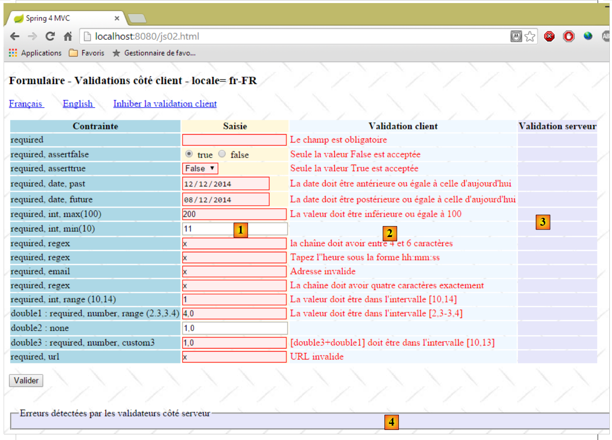
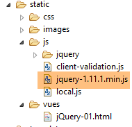
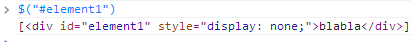
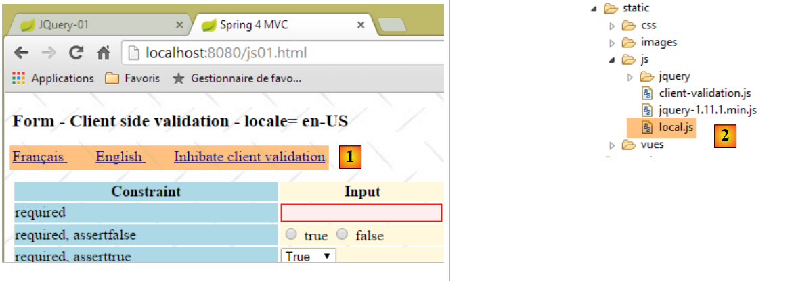
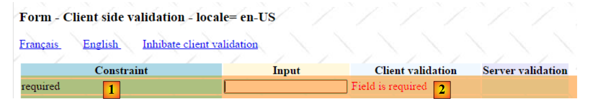
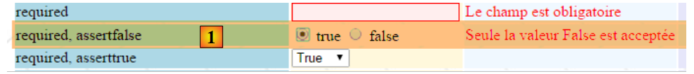
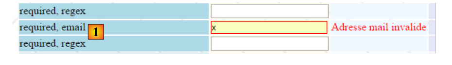

6. Validación con JavaScript del lado del cliente
En el capítulo anterior, analizamos la validación del lado del servidor. Volvamos a la arquitectura de una aplicación Spring MVC:
 |
BD
Hasta ahora, las páginas enviadas al cliente no contenían ningún código JavaScript. Ahora exploraremos esta tecnología, que nos permitirá inicialmente realizar la validación del lado del cliente. El principio es el siguiente:
- JavaScript envía los valores al servidor web;
- y así, antes de este POST, puede comprobar la validez de los datos e impedir el POST si los datos no son válidos;
Utilizaremos el formulario que validamos en el lado del servidor. Ahora ofreceremos la opción de validarlo tanto en el lado del cliente como en el lado del servidor.
Nota: Este es un tema complejo. Los lectores que no estén interesados en este tema pueden pasar directamente al párrafo 7.
6.1. Características del proyecto
Presentamos algunas vistas del proyecto para mostrar sus características. Se accede a la página inicial a través de la URL [http://localhost:8080/js01.html]
 |
Se han implementado validaciones tanto en el lado del cliente como en el del servidor. Dado que la solicitud POST solo se realiza si los valores se han considerado válidos en el lado del cliente, las validaciones del lado del servidor siempre se realizan con éxito. Por lo tanto, hemos incluido un enlace para desactivar las validaciones del lado del cliente. En este modo, el comportamiento es el mismo que el que ya hemos estudiado. A continuación se muestra un ejemplo:
123  |
- en [1], los valores introducidos;
- en [2], los mensajes de error relacionados con las entradas;
- en [3], un resumen de los errores, con lo siguiente para cada uno:
- el nombre del campo validado,
- el código de error,
- el mensaje predeterminado para ese código de error;
Ahora, habilitemos la validación del lado del cliente:
 |
- en [1], los valores introducidos. Tenga en cuenta que las entradas incorrectas tienen un estilo específico;
- en [2], los mensajes de error asociados a las entradas incorrectas. Son idénticos a los generados por el servidor;
- en [3-4], no hay nada porque, mientras haya entradas incorrectas, la solicitud POST al servidor no se realiza;
6.2. Validación del lado del servidor
6.2.1. Configuración
Comenzamos creando un nuevo proyecto Maven [springmvc-validation-client]:
 |
Desarrollamos el proyecto de la siguiente manera:
 |
La clase [Config] configura el proyecto. Es idéntica a la de los proyectos anteriores:
package istia.st.springmvc.config;
import java.util.Locale;
import org.springframework.boot.autoconfigure.EnableAutoConfiguration;
import org.springframework.context.MessageSource;
import org.springframework.context.annotation.Bean;
import org.springframework.context.annotation.ComponentScan;
import org.springframework.context.annotation.Configuration;
import org.springframework.context.support.ResourceBundleMessageSource;
import org.springframework.web.servlet.config.annotation.InterceptorRegistry;
import org.springframework.web.servlet.config.annotation.WebMvcConfigurerAdapter;
import org.springframework.web.servlet.i18n.CookieLocaleResolver;
import org.springframework.web.servlet.i18n.LocaleChangeInterceptor;
import org.thymeleaf.spring4.SpringTemplateEngine;
import org.thymeleaf.spring4.templateresolver.SpringResourceTemplateResolver;
@Configuration
@ComponentScan({ "istia.st.springmvc.controllers", "istia.st.springmvc.models" })
@EnableAutoConfiguration
public class Config extends WebMvcConfigurerAdapter {
@Bean
public MessageSource messageSource() {
ResourceBundleMessageSource messageSource = new ResourceBundleMessageSource();
messageSource.setBasename("i18n/messages");
return messageSource;
}
@Bean
public LocaleChangeInterceptor localeChangeInterceptor() {
LocaleChangeInterceptor localeChangeInterceptor = new LocaleChangeInterceptor();
localeChangeInterceptor.setParamName("lang");
return localeChangeInterceptor;
}
@Override
public void addInterceptors(InterceptorRegistry registry) {
registry.addInterceptor(localeChangeInterceptor());
}
@Bean
public CookieLocaleResolver localeResolver() {
CookieLocaleResolver localeResolver = new CookieLocaleResolver();
localeResolver.setCookieName("lang");
localeResolver.setDefaultLocale(new Locale("fr"));
return localeResolver;
}
@Bean
public SpringResourceTemplateResolver templateResolver() {
SpringResourceTemplateResolver templateResolver = new SpringResourceTemplateResolver();
templateResolver.setPrefix("classpath:/templates/");
templateResolver.setSuffix(".xml");
templateResolver.setTemplateMode("HTML5");
templateResolver.setCacheable(true);
templateResolver.setCharacterEncoding("UTF-8");
return templateResolver;
}
@Bean
SpringTemplateEngine templateEngine(SpringResourceTemplateResolver templateResolver) {
SpringTemplateEngine templateEngine = new SpringTemplateEngine();
templateEngine.setTemplateResolver(templateResolver);
return templateEngine;
}
}
La clase [Main] es la clase ejecutable del proyecto:
package istia.st.springmvc.main;
import istia.st.springmvc.config.Config;
import java.util.Arrays;
import org.springframework.boot.SpringApplication;
import org.springframework.context.ApplicationContext;
public class Main {
public static void main(String[] args) {
// launch the application
ApplicationContext context = SpringApplication.run(Config.class, args);
// displays the list of beans found by Spring
System.out.println("Liste des beans Spring");
String[] beanNames = context.getBeanDefinitionNames();
Arrays.sort(beanNames);
for (String beanName : beanNames) {
System.out.println(beanName);
}
}
}
- Línea 13: Spring Boot se inicia con el archivo de configuración [Config];
- líneas 15–20: En este ejemplo, mostramos cómo visualizar la lista de objetos gestionados por Spring. Esto puede resultar útil si alguna vez te parece que Spring no está gestionando alguno de tus componentes. Es una forma de verificarlo. También es una forma de verificar la autoconfiguración realizada por Spring Boot. En la consola, verás una lista similar a la siguiente:
Hemos resaltado los objetos definidos en la clase [Config].
6.2.2. El modelo de formulario
Sigamos explorando el proyecto:
 |
La clase [Form01] es la clase que recibirá los valores enviados. Es la siguiente:
package istia.st.springmvc.models;
import java.util.Date;
import javax.validation.constraints.AssertFalse;
import javax.validation.constraints.AssertTrue;
import javax.validation.constraints.DecimalMax;
import javax.validation.constraints.DecimalMin;
import javax.validation.constraints.Future;
import javax.validation.constraints.Max;
import javax.validation.constraints.Min;
import javax.validation.constraints.NotNull;
import javax.validation.constraints.Past;
import javax.validation.constraints.Pattern;
import javax.validation.constraints.Size;
import org.hibernate.validator.constraints.Email;
import org.hibernate.validator.constraints.Length;
import org.hibernate.validator.constraints.NotBlank;
import org.hibernate.validator.constraints.Range;
import org.hibernate.validator.constraints.URL;
import org.springframework.format.annotation.DateTimeFormat;
public class Form01 {
// posted values
@NotNull
@AssertFalse
private Boolean assertFalse;
@NotNull
@AssertTrue
private Boolean assertTrue;
@NotNull
@Future
@DateTimeFormat(pattern = "yyyy-MM-dd")
private Date dateInFuture;
@NotNull
@Past
@DateTimeFormat(pattern = "yyyy-MM-dd")
private Date dateInPast;
@NotNull
@Max(value = 100)
private Integer intMax100;
@NotNull
@Min(value = 10)
private Integer intMin10;
@NotNull
@NotBlank
private String strNotEmpty;
@NotNull
@Size(min = 4, max = 6)
private String strBetween4and6;
@NotNull
@Pattern(regexp = "^\\d{2}:\\d{2}:\\d{2}$")
private String hhmmss;
@NotNull
@Email
@NotBlank
private String email;
@NotNull
@Length(max = 4, min = 4)
private String str4;
@Range(min = 10, max = 14)
@NotNull
private Integer int1014;
@NotNull
@DecimalMax(value = "3.4")
@DecimalMin(value = "2.3")
private Double double1;
@NotNull
private Double double2;
@NotNull
private Double double3;
@URL
@NotBlank
private String url;
// customer validation
private boolean clientValidation = true;
// local
private String lang;
...
}
Vemos validadores que ya hemos visto antes. También introduciremos el concepto de validación personalizada. Se trata de un tipo de validación que no puede ser gestionada por un validador predefinido. Aquí, exigiremos que [double1+double2] esté en el rango [10,13].
6.2.3. El controlador
El controlador [JsController] es el siguiente:
 |
package istia.st.springmvc.controllers;
import istia.st.springmvc.models.Form01;
...
@Controller
public class JsController {
@RequestMapping(value = "/js01", method = RequestMethod.GET, produces = "text/html; charset=UTF-8")
public String js01(Form01 formulaire, Locale locale, Model model) {
setModel(formulaire, model, locale, null);
return "vue-01";
}
...
// preparing the view-01 model
private void setModel(Form01 formulaire, Model model, Locale locale, String message) {
...
}
}
- línea 9, la acción [/js01];
- línea 10: se instancia un objeto de tipo [Form01] y se coloca automáticamente en el modelo, asociado a la clave [form01];
- línea 10: la configuración regional y el modelo se inyectan en los parámetros;
- línea 11: con esta información, se prepara el modelo;
- línea 12: se muestra la vista [vue-01.xml];
El método [setModel] es el siguiente:
// preparing the view-01 model
private void setModel(Form01 formulaire, Model model, Locale locale, String message) {
// we only manage fr-FR, en-US locales
String language = locale.getLanguage();
String country = null;
if (language.equals("fr")) {
country = "FR";
formulaire.setLang("fr_FR");
}
if (language.equals("en")) {
country = "US";
formulaire.setLang("en_US");
}
model.addAttribute("locale", String.format("%s-%s", language, country));
// any message
if (message != null) {
model.addAttribute("message", message);
}
}
- El propósito del método [setModel] es añadir lo siguiente al modelo:
- información sobre la configuración regional,
- el mensaje pasado como último parámetro;
- línea 14: introducimos información sobre la configuración regional (idioma, país) en el modelo;
- líneas 16-18: cualquier mensaje pasado como parámetro se incluye en la configuración regional;
- líneas 8 y 12: la información de la configuración regional también se almacena en el formulario [Form01]. JavaScript utilizará esta información;
Los valores introducidos en el formulario [vue-01.xml] se enviarán a la siguiente acción [/js02]:
@RequestMapping(value = "/js02", method = RequestMethod.POST, produces = "text/html; charset=UTF-8")
public String js02(@Valid Form01 formulaire, BindingResult result, RedirectAttributes redirectAttributes, Locale locale, Model model) {
Form01Validator validator = new Form01Validator(10, 13);
validator.validate(formulaire, result);
...
}
- Línea 2: La anotación [@Valid Form01 form] garantiza que los valores enviados se someterán a los validadores de la clase [Form01]. Sabemos que existe una validación específica [double1+double2] dentro del rango [10,13]. Cuando llegamos a la línea 3, esta validación aún no se ha realizado;
- línea 3: creamos el siguiente objeto [Form01Validator]:
 |
package istia.st.springmvc.validators;
import istia.st.springmvc.models.Form01;
import org.springframework.validation.Errors;
import org.springframework.validation.Validator;
public class Form01Validator implements Validator {
// validation interval
private double min;
private double max;
// manufacturer
public Form01Validator(double min, double max) {
this.min = min;
this.max = max;
}
@Override
public boolean supports(Class<?> classe) {
return Form01.class.equals(classe);
}
@Override
public void validate(Object form, Errors errors) {
// validated object
Form01 form01 = (Form01) form;
// the value of [double1]
Double double1 = form01.getDouble1();
if (double1 == null) {
return;
}
// the value of [double2]
Double double2 = form01.getDouble2();
if (double2 == null) {
return;
}
// [double1+double2]
double somme = double1 + double2;
// validation
if (somme < min || somme > max) {
errors.rejectValue("double2", "form01.double2", new Double[] { min, max }, null);
}
}
}
- línea 8: para implementar una validación específica, creamos una clase que implementa la interfaz [Validator] de Spring. Esta interfaz tiene dos métodos: [supports] en la línea 21 y [validate] en la línea 26;
- líneas 21-23: el método [supports] toma un objeto de tipo [Class]. Debe devolver true para indicar que admite esta clase, false en caso contrario;
- línea 22: especificamos que la clase [Form01Validator] solo valida objetos de tipo [Form01];
- líneas 15-18: Recordemos que queremos implementar la restricción [double1+double2] dentro del intervalo [10,13]. En lugar de limitarnos a este intervalo, comprobaremos la restricción [double1+double2] dentro del intervalo [min, max]. Por eso tenemos un constructor con estos dos parámetros;
- línea 26: el método [validate] se invoca con una instancia del objeto validado —en este caso, una instancia de [Form01]— y con la colección de errores conocidos actualmente [Errors errors]. Si la validación realizada por el método [validate] falla, debe crear un nuevo elemento en la colección [Errors errors];
- línea 43: la validación ha fallado. Añadimos un elemento a la colección [Errors errors] utilizando el método [Errors.rejectValue], cuyos parámetros son los siguientes:
- parámetro 1: normalmente el nombre del campo con el error. Aquí hemos comprobado los campos [double1, double2]. Podemos utilizar cualquiera de los dos,
- el mensaje de error asociado, o más precisamente su clave en los archivos de mensajes externalizados:
[messages_fr.properties]
form01.double2=[double2+double1] doit être dans l''intervalle [{0},{1}]
[messages_en.properties]
form01.double2=[double2+double1] must be in [{0},{1}
Aquí tenemos mensajes parametrizados por {0} y {1}. Por lo tanto, se deben proporcionar dos valores para este mensaje. Esto es lo que hace el tercer parámetro del método [Errors.rejectValue].
- El cuarto parámetro es un mensaje predeterminado para el error;
Volvamos a la acción [/js02]:
@RequestMapping(value = "/js02", method = RequestMethod.POST, produces = "text/html; charset=UTF-8")
public String js02(@Valid Form01 formulaire, BindingResult result, RedirectAttributes redirectAttributes, Locale locale, Model model) {
Form01Validator validator = new Form01Validator(10, 13);
validator.validate(formulaire, result);
if (result.hasErrors()) {
StringBuffer buffer = new StringBuffer();
for (ObjectError error : result.getAllErrors()) {
buffer.append(String.format("[name=%s,code=%s,message=%s]", error.getObjectName(), error.getCode(), error.getDefaultMessage()));
}
setModel(formulaire, model, locale, buffer.toString());
return "vue-01";
} else {
redirectAttributes.addFlashAttribute("form01", formulaire);
return "redirect:/js01.html";
}
}
- línea 4: el validador [Form01Validator] se ejecuta con los siguientes parámetros:
- parámetro 1: el objeto que se está validando,
- parámetro 2: la lista de errores de este objeto. Se trata del objeto [BindingResult result] pasado como parámetro a la acción. Si la validación falla, este objeto tendrá un error más;
- línea 5: comprobamos si hay algún error de validación;
- líneas 7-10: recorremos la lista de errores para almacenar lo siguiente para cada uno:
- el nombre del objeto validado,
- su código de error,
- su mensaje de error predeterminado;
- línea 10: utilizando esta información, construimos la plantilla de vista [vue-01.xml]. En esta ocasión, hay un mensaje: la versión concatenada y abreviada de los distintos mensajes de error;
- líneas 12–15: si todos los valores enviados son válidos, redirigimos al cliente a la acción [/js01] estableciendo los valores enviados como atributos Flash;
6.2.4. La vista
La vista [view-01.xml] es compleja. Solo presentaremos una pequeña parte de ella:
<!DOCTYPE HTML>
<html xmlns:th="http://www.thymeleaf.org">
<head>
<title>Spring 4 MVC</title>
<meta http-equiv="Content-Type" content="text/html; charset=UTF-8" />
<link rel="stylesheet" href="/css/form01.css" />
<script type="text/javascript" src="/js/jquery/jquery-1.10.2.min.js"></script>
...
</head>
<body>
<!-- title -->
<h3>
<span th:text="#{form01.title}"></span>
<span th:text="${locale}"></span>
</h3>
<!-- menu -->
<p>
...
</p>
<!-- form -->
<form action="/someURL" th:action="@{/js02.html}" method="post" th:object="${form01}" name="form" id="form">
<table>
<thead>
<tr>
<th class="col1" th:text="#{form01.col1}">Contrainte</th>
<th class="col2" th:text="#{form01.col2}">Saisie</th>
<th class="col3" th:text="#{form01.col3}">Validation client</th>
<th class="col4" th:text="#{form01.col4}">Validation serveur</th>
</tr>
</thead>
<tbody>
<!-- required -->
<tr>
<td class="col1">required</td>
<td class="col2">
<input type="text" th:field="*{strNotEmpty}" data-val="true" th:attr="data-val-required=#{NotNull}" />
</td>
<td class="col3">
<span class="field-validation-valid" data-valmsg-for="strNotEmpty" data-valmsg-replace="true"></span>
</td>
<td class="col4">
<span th:if="${#fields.hasErrors('strNotEmpty')}" th:errors="*{strNotEmpty}" class="error">Donnée erronée</span>
</td>
</tr>
...
</tbody>
</table>
<p>
<!-- validation button -->
<input type="submit" th:value="#{form01.valider}" value="Valider" onclick="javascript:postForm01()" />
</p>
</form>
<!-- server-side validator message -->
<br/>
<fieldset class="fieldset">
<legend>
<span th:text="#{server.error.message}"></span>
</legend>
<span th:text="${message}" class="error"></span>
</fieldset>
</body>
</html>
Esta página utiliza varios mensajes que se encuentran en los archivos de mensajes externos:
[messages_fr.properties]
form01.title=Formulaire - Validations côté client - locale=
form01.col1=Contrainte
form01.col2=Saisie
form01.col3=Validation client
form01.col4=Validation serveur
form01.valider=Valider
server.error.message=Erreurs détectées par les validateurs côté serveur
[messages_en.properties]
form01.title=Form - Client side validation - locale=
form01.col1=Constraint
form01.col2=Input
form01.col3=Client validation
form01.col4=Server validation
form01.valider=Validate
server.error.message=Errors detected by the validators on the server side
Volvamos al código de la página:
- línea 8: un gran número de importaciones de bibliotecas JavaScript que podemos ignorar aquí;
- línea 14: muestra la configuración regional establecida en la plantilla por el servidor;
- línea 59: muestra el mensaje establecido en la plantilla por el servidor;
El código de las líneas 33 a 44 es nuevo. Analicémoslo:
<!-- required -->
<tr>
<td class="col1">required</td>
<td class="col2">
<input type="text" th:field="*{strNotEmpty}" data-val="true" th:attr="data-val-required=#{NotNull}" />
</td>
<td class="col3">
<span class="field-validation-valid" data-valmsg-for="strNotEmpty" data-valmsg-replace="true"></span>
</td>
<td class="col4">
<span th:if="${#fields.hasErrors('strNotEmpty')}" th:errors="*{strNotEmpty}" class="error">Donnée erronée</span>
</td>
</tr>
El enfoque más sencillo podría ser examinar el código HTML generado por este segmento de Thymeleaf:
<!-- required -->
<tr>
<td class="col1">required</td>
<td class="col2">
<input type="text" data-val="true" data-val-required="Le champ est obligatoire" id="strNotEmpty" name="strNotEmpty" value="" />
</td>
<td class="col3">
<span class="field-validation-valid" data-valmsg-for="strNotEmpty" data-valmsg-replace="true"></span>
</td>
<td class="col4">
</td>
</tr>
Utilizaremos una biblioteca de validación del lado del cliente llamada [jquery.validate]. Todos los atributos [data-x] son para esta biblioteca. Cuando la validación del lado del cliente está desactivada, estos atributos no se utilizarán. Por lo tanto, por ahora, no es necesario entenderlos. Podemos centrarnos simplemente en la siguiente línea de Thymeleaf:
<input type="text" th:field="*{strNotEmpty}" data-val="true" th:attr="data-val-required=#{NotNull}" />
que genera la siguiente línea HTML:
<input type="text" data-val="true" data-val-required="Le champ est obligatoire" id="strNotEmpty" name="strNotEmpty" value="" />
Como se ha mencionado anteriormente, existe un problema a la hora de generar el atributo [data-val-required="Este campo es obligatorio"]. Esto se debe a que el valor asociado al atributo procede de archivos de mensajes externalizados. Por lo tanto, nos vemos obligados a utilizar una expresión de Thymeleaf para obtenerlo. La expresión es la siguiente: [th:attr="data-val-required=#{NotNull}"]. Esta expresión se evalúa y su valor se inserta tal cual en la etiqueta HTML generada. Se denomina [th:attr] porque se utiliza para generar atributos no predefinidos en Thymeleaf. Hemos encontrado atributos predefinidos [th:text, th:value, th:class, ...], pero no existe el atributo [th:data-val-required].
6.2.5. La hoja de estilo
Arriba vemos clases CSS como [class="field-validation-valid"]. Algunas de estas clases son utilizadas por la biblioteca de validación de JavaScript. Están definidas en el siguiente archivo [form01.css]:
 |
@CHARSET "UTF-8";
/*styles perso*/
body {
background-image: url("/images/standard.jpg");
}
.col1 {
background: lightblue;
}
.col2 {
background: Cornsilk;
}
.col3 {
background: AliceBlue;
}
.col4 {
background: Lavender;
}
.error {
color: red;
}
.fieldset{
background: Lavender;
}
/* Styles for validation helpers
-----------------------------------------------------------*/
.field-validation-error {
color: #f00;
}
.field-validation-valid {
display: none;
}
.input-validation-error {
border: 1px solid #f00;
background-color: #fee;
}
.validation-summary-errors {
font-weight: bold;
color: #f00;
}
.validation-summary-valid {
display: none;
}
6.3. Validación del lado del cliente
6.3.1. Conceptos básicos de jQuery y JavaScript
La validación del lado del cliente se realiza mediante JavaScript. Utilizaremos el marco jQuery, que ofrece numerosas funciones que simplifican el desarrollo en JavaScript. En este capítulo y en los siguientes, abordaremos los conceptos básicos de jQuery necesarios para comprender los scripts.
Creamos un archivo HTML estático [JQuery-01.html] y lo colocamos en una carpeta [static / views]:
 |
Este archivo tendrá el siguiente contenido:
<!DOCTYPE html>
<html xmlns="http://www.w3.org/1999/xhtml">
<head>
<meta http-equiv="Content-Type" content="text/html; charset=utf-8" />
<title>JQuery-01</title>
<script type="text/javascript" src="/js/jquery-1.11.1.min.js"></script>
</head>
<body>
<h3>Rudiments de JQuery</h3>
<div id="element1">
Elément 1
</div>
</body>
</html>
- línea 6: importación de jQuery;
- líneas 10–12: un elemento de página con el ID [element1]. Vamos a trabajar con este elemento.
Tenemos que descargar el archivo [jquery-1.11.1.min.js]. Puedes encontrar la última versión de jQuery en la URL [http://jquery.com/download/]:

Colocaremos el archivo descargado en la carpeta [static / js]:
 |
Una vez hecho esto, abre la vista estática [jQuery-01.html] en Chrome [1-2]:
 |
En Google Chrome, pulsa [Ctrl-Shift-I] para abrir las herramientas de desarrollo [3]. La pestaña [Consola] [4] te permite ejecutar código JavaScript. A continuación, te proporcionamos los comandos JavaScript que debes escribir y te explicamos para qué sirven.
JS | resultado |
|
: devuelve la colección de todos los elementos con el ID [element1], por lo que normalmente es una colección de 0 o 1 elemento, ya que no se pueden tener dos ID idénticos en una página HTML. |  |
|
: establece el texto [blabla] para todos los elementos de la colección. Esto cambia el contenido que se muestra en la página |  |
|
oculta los elementos de la colección. El texto [blabla] ya no se muestra. |  |
|
: vuelve a mostrar la colección. Esto nos permite ver que el elemento con el ID [element1] tiene el atributo CSS style='display: none;', lo que hace que el elemento quede oculto. |  |
|
: muestra los elementos de la colección. El texto [blabla] vuelve a aparecer. El atributo CSS style='display: block;' es el responsable de esta visualización. |  |
|
: Establece un atributo en todos los elementos de la colección. El atributo aquí es [style] y su valor es [color: red]. El texto [blabla] se vuelve rojo. |  |
 | |
 |
Fíjate en que la URL del navegador no ha cambiado durante todas estas operaciones. No ha habido comunicación con el servidor web. Todo ocurre dentro del navegador. Ahora, veamos el código fuente de la página:
<!DOCTYPE html>
<html xmlns="http://www.w3.org/1999/xhtml">
<head>
<meta http-equiv="Content-Type" content="text/html; charset=utf-8" />
<title>JQuery-01</title>
<script type="text/javascript" src="/js/jquery-1.11.1.min.js"></script>
</head>
<body>
<h3>Rudiments de JQuery</h3>
<div id="element1">
Elément 1
</div>
</body>
</html>
Este es el texto original. No refleja los cambios realizados en el elemento de las líneas 10 a 12. Es importante tener esto en cuenta al depurar JavaScript. En tales casos, a menudo no es necesario ver el código fuente de la página mostrada.
Ahora sabemos lo suficiente para comprender los scripts de JavaScript que siguen.
6.3.2. Bibliotecas de validación de JS
Utilizaremos bibliotecas del ecosistema jQuery. Existen numerosos proyectos que giran en torno a jQuery, lo que a su vez da lugar a la creación de bibliotecas. Utilizaremos la biblioteca de validación [jquery.validate.unobstrusive] creada por Microsoft y donada a la Fundación jQuery. En adelante nos referiremos a ella como la biblioteca de validación de MS o, más sencillamente, la biblioteca de MS. Para obtenerla, necesitas un entorno Microsoft Visual Studio. No he visto ninguna otra forma de conseguirla. Puedes utilizar una versión gratuita como [Visual Studio Community] [http://www.visualstudio.com/en-us/news/vs2013-community-vs.aspx] (diciembre de 2014). Los lectores que no estén interesados en seguir los pasos que se indican a continuación pueden descargar esta biblioteca y aquellas de las que depende a partir de los ejemplos proporcionados en el sitio web de este documento.
Crea un proyecto de consola con Visual Studio [1-4]:
|


 |
- en [5], el proyecto de consola;
- en [6-7]: añadiremos paquetes [NuGet] al proyecto. [NuGet] es una característica de Visual Studio que permite descargar bibliotecas en forma de DLL, así como bibliotecas de JavaScript.
 |
- En [9-10], busca utilizando la palabra clave [jQuery];
- En [11-13], descargue las bibliotecas JavaScript necesarias para la validación del lado del cliente en el orden indicado;
- En [14], descargue también la biblioteca [Microsoft jQuery Unobtrusive Ajax], que utilizaremos en breve;
 |
- En [15-16], busca paquetes utilizando la palabra clave [globalize];
- en [17], descargue la biblioteca [jQuery.Validation.Globalize];
 |
Estas diversas descargas han instalado varias bibliotecas JavaScript en la carpeta [Scripts] del proyecto [18]. No todas son útiles. Cada archivo viene en dos versiones:
- [js]: la versión legible de la biblioteca;
- [min.js]: la versión ilegible, denominada «minificada», de la biblioteca. No es realmente ilegible —es texto—, pero no es comprensible. Esta es la versión que se debe utilizar en producción, ya que este archivo es más pequeño que la versión [js] correspondiente y, por lo tanto, mejora la velocidad de comunicación entre el cliente y el servidor;
Las versiones [min.map] no son esenciales. En la carpeta [cultures], puedes conservar solo las culturas gestionadas por la aplicación.
Utilizando el Explorador de Windows, copie estos archivos a la carpeta [static/js/jquery] del proyecto [springmvc-validation-client] y conserve solo los archivos útiles [20]:
 |
En [21], mantén solo dos configuraciones regionales:
- [fr-FR]: francés (Francia);
- [en-US]: inglés de EE. UU.;
6.3.3. Importación de bibliotecas JS de validación
Para poder utilizarlas, estas bibliotecas deben importarse en la vista [vue-01.xml]:
<head>
<title>Spring 4 MVC</title>
<meta http-equiv="Content-Type" content="text/html; charset=UTF-8" />
<link rel="stylesheet" href="/css/form01.css" />
<script type="text/javascript" src="/js/jquery/jquery-2.1.1.min.js"></script>
<script type="text/javascript" src="/js/jquery/jquery.validate.min.js"></script>
<script type="text/javascript" src="/js/jquery/jquery.validate.unobtrusive.min.js"></script>
<script type="text/javascript" src="/js/jquery/globalize/globalize.js"></script>
<script type="text/javascript" src="/js/jquery/globalize/cultures/globalize.culture.fr-FR.js"></script>
<script type="text/javascript" src="/js/jquery/globalize/cultures/globalize.culture.en-US.js"></script>
<script type="text/javascript" src="/js/client-validation.js"></script>
<script type="text/javascript" src="/js/local.js"></script>
<script th:inline="javascript">
/*<![CDATA[*/
var culture = [[${locale}]];
Globalize.culture(culture);
/*]]>*/
</script>
</head>
- línea 11: importación de un archivo JavaScript del que aún no hemos hablado;
- líneas 13–18: un script de JavaScript interpretado por Thymelaf. Gestiona la configuración regional del lado del cliente;
6.3.4. Gestión de la configuración regional del lado del cliente
La localización del lado del cliente se gestiona mediante el siguiente script de JavaScript:
<script th:inline="javascript">
/*<![CDATA[*/
var culture = [[${locale}]];
Globalize.culture(culture);
/*]]>*/
</script>
- Líneas 3-4: Código JavaScript que contiene la expresión de Thymeleaf [[${locale}]]. Fíjate en la sintaxis específica de esta expresión, ya que está escrita en JavaScript. La expresión [[${locale}]] se sustituirá por el valor de la clave [locale] en la plantilla de vista;
El resultado en la salida HTML generada por estas líneas es el siguiente:
<script>
/*<![CDATA[*/
var culture = 'en-US';
Globalize.culture(culture);
/*]]>*/
</script>
Las líneas 3-4 establecen la configuración regional del lado del cliente. Solo admitimos dos: [fr-FR] y [en-US]. Por eso solo hemos importado dos archivos de configuración regional:
<script type="text/javascript" src="/js/jquery/globalize/cultures/globalize.culture.fr-FR.js"></script>
<script type="text/javascript" src="/js/jquery/globalize/cultures/globalize.culture.en-US.js"></script>
La cultura que se utilizará en el lado del cliente se configura en el lado del servidor. Volvamos al código del lado del servidor:
@RequestMapping(value = "/js01", method = RequestMethod.GET, produces = "text/html; charset=UTF-8")
public String js01(Form01 formulaire, Locale locale, Model model) {
setModel(formulaire, model, locale, null);
return "vue-01";
}
// preparing the view-01 model
private void setModel(Form01 formulaire, Model model, Locale locale, String message) {
// we only manage fr-FR, en-US locales
String language = locale.getLanguage();
String country = null;
if (language.equals("fr")) {
country = "FR";
formulaire.setLang("fr_FR");
}
if (language.equals("en")) {
country = "US";
formulaire.setLang("en_US");
}
model.addAttribute("locale", String.format("%s-%s", language, country));
...
}
- Línea 20: La configuración regional [fr-FR] o [en-US] se establece en la plantilla de vista [vue-01.xml] (línea 4). Tenga en cuenta una posible fuente de complicaciones. Mientras que la configuración regional francesa se indica como [fr-FR] en el lado del cliente, en el lado del servidor se indica como [fr_FR]. Por eso, en las líneas 14 y 18, se almacena de esta forma en el objeto [Form01] que recibe los valores enviados;
Tenga en cuenta el siguiente punto importante. El script
<script>
/*<![CDATA[*/
var culture = 'en-US';
Globalize.culture(culture);
/*]]>*/
</script>
cambia la cultura del cliente en función de la configuración regional enviada por el servidor. Esto no internacionaliza los mensajes que se muestran en la página. Solo cambia la forma en que se interpreta cierta información que depende de la cultura de un país. Con la cultura [fr_FR], el número real [12.78] es válido, mientras que no lo es con la cultura [en-US]. Por lo tanto, debe escribir [12.78]. Del mismo modo, la fecha [12/01/2014] es válida en la configuración regional [fr-FR], mientras que en la configuración regional [en-US] debe escribir [01/12/2014]. Los archivos de la carpeta [jquery / globalize] gestionan este tipo de cuestiones:
 |
La internacionalización de los mensajes de error se gestiona exclusivamente en el lado del servidor. Veremos que la página HTML/JS muestra los mensajes de error correspondientes a la configuración regional gestionada por el servidor: en francés para la configuración regional [fr_FR] y en inglés para la configuración regional [en_US].
6.3.5. Los archivos de mensajes
La vista [vue-01.xml] utiliza los siguientes mensajes internacionalizados:
 |
[messages_fr.properties]
NotNull=Le champ est obligatoire
NotEmpty=La donnée ne peut être vide
NotBlank=La donnée ne peut être vide
typeMismatch=Format invalide
Future.form01.dateInFuture=La date doit être postérieure ou égale à celle d''aujourd'hui
Past.form01.dateInPast=La date doit être antérieure ou égale à celle d''aujourd'hui
Min.form01.intMin10=La valeur doit être supérieure ou égale à 10
Max.form01.intMax100=La valeur doit être inférieure ou égale à 100
Size.form01.strBetween4and6=La chaîne doit avoir entre 4 et 6 caractères
Length.form01.str4=La chaîne doit avoir quatre caractères exactement
Email.form01.email=Adresse mail invalide
URL.form01.url=URL invalide
Range.form01.int1014=La valeur doit être dans l''intervalle [10,14]
AssertTrue=Seule la valeur True est acceptée
AssertFalse=Seule la valeur False est acceptée
Pattern.form01.hhmmss=Tapez l''heure sous la forme hh:mm:ss
form01.hhmmss.pattern=^\\d{2}:\\d{2}:\\d{2}$
DateInvalide.form01=Date invalide
form01.str4.pattern=^.{4,4}$
form01.int1014.max=14
form01.int1014.min=10
form01.strBetween4and6.pattern=^.{4,6}$
form01.intMax100.value=100
form01.intMin10.value=10
form01.double1.min=2.3
form01.double1.max=3.4
Range.form01.double1=La valeur doit être dans l'intervalle [2,3-3,4]
form01.title=Formulaire - Validations côté client - locale=
form01.col1=Contrainte
form01.col2=Saisie
form01.col3=Validation client
form01.col4=Validation serveur
form01.valider=Valider
form01.double2=[double2+double1] doit être dans l''intervalle [{0},{1}]
form01.double3=[double3+double1] doit être dans l''intervalle [{0},{1}]
locale.fr=Français
locale.en=English
client.validation.true=Activer la validation client
client.validation.false=Inhiber la validation client
DecimalMin.form01.double1=Le nombre doit être supérieur ou égal à 2,3
DecimalMax.form01.double1=Le nombre doit être inférieur ou égal à 3,4
server.error.message=Erreurs détectées par les validateurs côté serveur
[messages_en.properties]
NotNull=Field is required
NotEmpty=Field can''t be empty
NotBlank=Field can''t be empty
typeMismatch=Invalid format
Future.form01.dateInFuture=Date must be greater or equal to today''s date
Past.form01.dateInPast=Date must be lower or equal today''s date
Min.form01.intMin10=Value must be higher or equal to 10
Max.form01.intMax100=Value must be lower or equal to 100
Size.form01.strBetween4and6=String must have between 4 and 6 characters
Length.form01.str4=String must be exactly 4 characters long
Email.form01.email=Invalid mail address
URL.form01.url=Invalid URL
Range.form01.int1014=Value must be in [10,14]
AssertTrue=Only value True is allowed
AssertFalse=Only value False is allowed
Pattern.form01.hhmmss=Time must follow the format hh:mm:ss
form01.hhmmss.pattern=^\\d{2}:\\d{2}:\\d{2}$
DateInvalide.form01=Invalid Date
form01.str4.pattern=^.{4,4}$
form01.int1014.max=14
form01.int1014.min=10
form01.strBetween4and6.pattern=^.{4,6}$
form01.intMax100.value=100
form01.intMin10.value=10
form01.double1.min=2.3
form01.double1.max=3.4
Range.form01.double1=Value must be in [2.3,3.4]
form01.title=Form - Client side validation - locale=
form01.col1=Constraint
form01.col2=Input
form01.col3=Client validation
form01.col4=Server validation
form01.valider=Validate
form01.double2=[double2+double1] must be in [{0},{1}]
form01.double3=[double3+double1] must be in [{0},{1}]
locale.fr=Français
locale.en=English
client.validation.true=Activate client validation
client.validation.false=Inhibate client validation
DecimalMin.form01.double1=Value must be greater or equal to 2.3
DecimalMax.form01.double1=Value must be lower or equal to 3.4
server.error.message=Errors detected by the validators on the server side
El archivo [messages.properties] es una copia del archivo de mensajes en inglés. En última instancia, cualquier configuración regional distinta de [fr] utilizará mensajes en inglés. Tenga en cuenta que el archivo [messages_fr.properties] se utiliza para todas las configuraciones regionales [fr_XX], como [fr_CA] o [fr_FR].
La vista [vue-01.xml] utiliza las claves de estos mensajes. Si desea conocer el valor asociado a estas claves, consulte esta sección para encontrarlo.
6.3.6. Cambiar la configuración regional
La vista [vue-01.xml] contiene cuatro enlaces:
<body>
<!-- title -->
<h3>
<span th:text="#{form01.title}"></span>
<span th:text="${locale}"></span>
</h3>
<!-- menu -->
<p>
<a id="locale_fr" href="javascript:setLocale('fr_FR')">
<span th:text="#{locale.fr}"></span>
</a>
<a id="locale_en" href="javascript:setLocale('en_US')">
<span style="margin-left:30px" th:text="#{locale.en}"></span>
</a>
<a id="clientValidationTrue" href="javascript:setClientValidation(true)">
<span style="margin-left:30px" th:text="#{client.validation.true}"></span>
</a>
<a id="clientValidationFalse" href="javascript:setClientValidation(false)">
<span style="margin-left:30px" th:text="#{client.validation.false}"></span>
</a>
</p>
<!-- form -->
<form action="/someURL" th:action="@{/js02.html}" method="post" th:object="${form01}" name="form" id="form">
...
algunos de los cuales se muestran a continuación [1]:
 |
Veamos los dos enlaces que permiten cambiar la configuración regional al francés o al inglés:
<a id="locale_fr" href="javascript:setLocale('fr_FR')">
<span th:text="#{locale.fr}"></span>
</a>
<a id="locale_en" href="javascript:setLocale('en_US')">
<span style="margin-left:30px" th:text="#{locale.en}"></span>
</a>
Al hacer clic en estos enlaces se activa la ejecución de un script de JavaScript ubicado en el archivo [local.js] [2]. En ambos casos, se invoca una función de JavaScript [setLocale]:
// local
function setLocale(locale) {
// update the locale
lang.val(locale);
// we submit the form - this doesn't trigger the client validators - that's why we haven't inhibited client-side validation
document.form.submit();
}
Para entender la línea 4 se necesita cierta información previa. La vista [vue-01.xml] incluye un campo oculto llamado [lang]:
<input type="hidden" th:field="*{lang}" th:value="*{lang}" value="true" />
que se corresponde con un campo [lang] en [Form01]:
// locale
private String lang;
Los campos ocultos son útiles cuando se desea enriquecer los valores enviados. JavaScript permite asignarles un valor, y este valor se envía como una entrada de usuario normal. El código HTML generado por Thymeleaf es el siguiente:
<input type="hidden" value="en_US" id="lang" name="lang" />
El valor del parámetro [value] es el del campo [Form01.lang] en el momento en que se genera el HTML. Lo importante a tener en cuenta es el identificador JavaScript del nodo [id="lang"]. Este identificador es utilizado por la siguiente función []:
// global variables
var lang;
// document ready
$(document).ready(function() {
// global references
lang = $("#lang");
});
// local
function setLocale(locale) {
// update the locale
lang.val(locale);
// the form is submitted - for some reason this does not trigger the client's validators
// that's why we didn't inhibit validation
document.form.submit();
}
- líneas 5-8: la función JavaScript [$(document).ready(f)] es una función que se ejecuta cuando el navegador ha cargado todo el documento enviado por el servidor. Su parámetro es una función. Utilizamos la función JavaScript [$(document).ready(f)] para inicializar el entorno JavaScript del documento cargado;
- línea 7: la expresión [$("#lang")] es una expresión jQuery. Su valor es una referencia al nodo DOM con el atributo [id='lang'];
- línea 2: las variables declaradas fuera de una función son globales para todas las funciones. En este caso, esto significa que la variable [lang] inicializada en [$(document).ready()] también está disponible en la función [setLocale] de la línea 11;
- línea 13: modifica el atributo [value] del nodo identificado por [lang]. Si lang es [xx_XX], entonces la etiqueta HTML del nodo pasa a ser:
<input type="hidden" value="xx_XX" id="lang" name="lang" />
JavaScript te permite modificar los valores de los elementos del DOM (Modelo de Objetos del Documento).
- Línea 16: [document] hace referencia al DOM. [document.form] hace referencia al primer formulario que se encuentra en este documento. Un documento HTML puede tener varias etiquetas <form> y, por lo tanto, varios formularios. Aquí solo tenemos uno. [document.form.submit] envía este formulario como si el usuario hubiera hecho clic en un botón con el atributo [type='submit']. ¿A qué acción se envían los valores del formulario? Para averiguarlo, fíjate en la etiqueta [form] en [vue-01.xml]:
<!-- form -->
<form action="/someURL" th:action="@{/js02.html}" method="post" th:object="${form01}" name="form" id="form">
La acción que recibirá los valores enviados es la designada por el atributo [th:action]. Por lo tanto, será la acción [/js02.html]. Recuerda que en este nombre se eliminará el sufijo [.html] y, en última instancia, se ejecutará la acción [/js02]. Es importante comprender que el nuevo valor [xx_XX] del nodo [lang] se enviará en el formulario como [lang=xx_XX]. Sin embargo, hemos configurado nuestra aplicación para interceptar el parámetro [lang] e interpretarlo como un cambio de configuración regional. Así pues, en el lado del servidor, la configuración regional pasará a ser [xx_XX]. Veamos la acción [/js02] que se ejecutará:
@RequestMapping(value = "/js02", method = RequestMethod.POST, produces = "text/html; charset=UTF-8")
public String js02(@Valid Form01 formulaire, BindingResult result, RedirectAttributes redirectAttributes, Locale locale, Model model) {
Form01Validator validator = new Form01Validator(10, 13);
validator.validate(formulaire, result);
if (result.hasErrors()) {
StringBuffer buffer = new StringBuffer();
for (ObjectError error : result.getAllErrors()) {
buffer.append(String.format("[name=%s,code=%s,message=%s]", error.getObjectName(), error.getCode(),
error.getDefaultMessage()));
}
setModel(formulaire, model, locale, buffer.toString());
return "vue-01";
} else {
redirectAttributes.addFlashAttribute("form01", formulaire);
return "redirect:/js01.html";
}
}
// preparing the view-01 model
private void setModel(Form01 formulaire, Model model, Locale locale, String message) {
// we only manage fr-FR, en-US locales
String language = locale.getLanguage();
String country = null;
if (language.equals("fr")) {
country = "FR";
formulaire.setLang("fr_FR");
}
if (language.equals("en")) {
country = "US";
formulaire.setLang("en_US");
}
model.addAttribute("locale", String.format("%s-%s", language, country));
...
}
- línea 2: la acción [/js02] recibirá la nueva configuración regional [xx_XX] encapsulada en el parámetro [Locale locale]:
- líneas 5-12: si alguno de los valores enviados no es válido, se mostrará la vista [vue-01.xml] con mensajes de error utilizando la nueva configuración regional [xx_XX]. Además, la línea 11 establece la variable [locale=xx-XX] en el modelo. En el lado del cliente, este valor se utilizará para actualizar la configuración regional del lado del cliente. Hemos descrito este proceso;
- Líneas 14-15: Si todos los valores enviados son válidos, se produce una redirección a la siguiente acción [/js01]:
@RequestMapping(value = "/js01", method = RequestMethod.GET, produces = "text/html; charset=UTF-8")
public String js01(Form01 formulaire, Locale locale, Model model) {
setModel(formulaire, model, locale, null);
return "vue-01";
}
- línea 2: se inyecta la nueva configuración regional [xx_XX];
- línea 3: el método [setModel] establecerá entonces la configuración regional del cliente en [xx-XX];
Ahora veamos la influencia de la configuración regional en la vista [view-01.xml]. Por el momento, no hemos mostrado la vista completa porque tiene más de 300 líneas. Sin embargo, la mayoría de las líneas consisten en una secuencia similar a la siguiente:
<!-- required -->
<tr>
<td class="col1">required</td>
<td class="col2">
<input type="text" th:field="*{strNotEmpty}" data-val="true" th:attr="data-val-required=#{NotNull}" />
</td>
<td class="col3">
<span class="field-validation-valid" data-valmsg-for="strNotEmpty" data-valmsg-replace="true"></span>
</td>
<td class="col4">
<span th:if="${#fields.hasErrors('strNotEmpty')}" th:errors="*{strNotEmpty}" class="error">Donnée erronée</span>
</td>
</tr>
Este código muestra el siguiente fragmento [1]:
 |
El mensaje de error [2] proviene del atributo [th:attr="data-val-required=#{NotNull}"] de la línea 5. [#{NotNull}] es un mensaje localizado. Dependiendo de la configuración regional del lado del servidor, la línea 5 genera la etiqueta:
<input type="text" data-val="true" data-val-required="Field is required" id="strNotEmpty" name="strNotEmpty" />
o la etiqueta:
<input type="text" data-val="true" data-val-required="Le champ est obligatoire" id="strNotEmpty" name="strNotEmpty" />
Los atributos [data-x] son utilizados por la biblioteca JavaScript de validación.
Por último, ten en cuenta que ambos enlaces de cambio de configuración regional:
- desencadenan una solicitud POST con los valores introducidos;
- cambian la configuración regional tanto en el lado del servidor como en el del cliente;
- generan una página HTML que incluye mensajes de error destinados a la biblioteca de validación JavaScript, y garantizan que estos mensajes estén en el idioma de la configuración regional seleccionada;
6.3.7. Envío de los valores introducidos
Examinemos el botón [Validate], que envía los valores introducidos en la vista [vue-01.xml]. Su código HTML es el siguiente:
<!-- validation button -->
<input type="submit" value="Valider" onclick="javascript:postForm01()" />
Si JavaScript está habilitado en el navegador, al hacer clic en el botón se activará la ejecución del método [postForm01]. Si esta función devuelve el valor booleano [False], el envío no se llevará a cabo. Si devuelve cualquier otro valor, el envío se llevará a cabo. Esta función se encuentra en el archivo [local.js]:
 |
Se importa desde la vista [vue-01.xml] mediante la línea 6 que se muestra a continuación:
<head>
<title>Spring 4 MVC</title>
<meta http-equiv="Content-Type" content="text/html; charset=UTF-8" />
<link rel="stylesheet" href="/css/form01.css" />
...
<script type="text/javascript" src="/js/local.js"></script>
</head>
En este archivo, encontramos el siguiente código:
// global variables
var formulaire;
var clientValidation;
var double1;
var double2;
var double3;
...
$(document).ready(function() {
// global references
formulaire = $("#form");
clientValidation = $("#clientValidation");
double1 = $("#double1");
double2 = $("#double2");
double3 = $("#double3");
...
});
....
// post form
function postForm01() {
...
}
- líneas 8–16: la función JavaScript [$(document).ready(f)] es una función que se ejecuta cuando el navegador ha cargado todo el documento enviado por el servidor. Su parámetro es una función. Utilizamos la función JavaScript [$(document).ready(f)] para inicializar el entorno JavaScript del documento cargado;
- Líneas 10–14: Para entender estas líneas, hay que fijarse tanto en el código Thymeleaf como en el código HTML generado;
El código Thymeleaf relevante es el siguiente:
<form action="/someURL" th:action="@{/js02.html}" method="post" th:object="${form01}" name="form" id="form">
...
<input type="text" th:field="*{double1}" th:value="*{double1}" ... />
...
<input type="text" th:field="*{double2}" th:value="*{double2}" />
...
<input type="text" th:field="*{double3}" th:value="*{double3}" ... />
...
<input type="hidden" th:field="*{clientValidation}" th:value="*{clientValidation}" value="true" />
lo que genera el siguiente código HTML:
<form action="/js02.html" method="post" name="form" id="form">
...
<input type="text" id="double1" name="double1" .../>
....
<input type="text" value="" id="double2" name="double2" />
...
<input value="" id="double3" name="double3" .../>
...
<input type="hidden" value="false" id="clientValidation" name="clientValidation" />
Cada atributo [th:field='x'] genera dos atributos HTML: [name='x'] y [id='x']. El atributo [name] es el nombre de los valores enviados. Por lo tanto, la presencia de los atributos [name='x'] y [value='y'] para una etiqueta HTML <input type='text'> colocará la cadena x=y en los valores enviados name1=val1&name2=val2&... El atributo [id='x'] es utilizado por JavaScript. Sirve para identificar un elemento del DOM (Modelo de Objetos del Documento). El documento HTML cargado se transforma, de hecho, en un árbol de JavaScript denominado DOM, donde cada nodo se identifica mediante su atributo [id].
Volvamos al código de la función [$(document).ready()]:
// global variables
var formulaire;
var clientValidation;
var double1;
var double2;
var double3;
...
$(document).ready(function() {
// global references
formulaire = $("#form");
clientValidation = $("#clientValidation");
double1 = $("#double1");
double2 = $("#double2");
double3 = $("#double3");
...
});
....
// post form
function postForm01() {
...
}
- línea 10: la expresión [$("#form")] es una expresión jQuery. Su valor es una referencia al nodo DOM con el atributo [id='form'];
- líneas 10–14: recuperamos referencias a cinco nodos DOM;
- líneas 2–6: las variables declaradas fuera de una función son globales para las funciones. En este caso, esto significa que las variables [form, clientValidation, double1, double2, double3] inicializadas en [$(document).ready()] también estarán disponibles en la función [postForm01] de la línea 19;
Ahora, examinemos la función [postForm01]:
// post formulaire
function postForm01() {
// mode de validation côté client
var validationActive = clientValidation.val() === "true";
if (validationActive) {
// on efface les erreurs du serveur
clearServerErrors();
// validation du formulaire
if (!formulaire.validate().form()) {
// pas de submit
return false;
}
}
// réels au format anglo-saxon
var value1 = double1.val().replace(",", ".");
double1.val(value1);
var value2 = double2.val().replace(",", ".");
double2.val(value2);
var value3 = double3.val().replace(",", ".");
double3.val(value3);
// on laisse le submit se faire
return true;
}
Recuerda que esta función JavaScript se ejecuta antes de que se envíe el formulario. Si devuelve [false] (línea 11), el formulario no se enviará. Si devuelve cualquier otro valor (línea 22), el formulario se enviará.
- El código importante se encuentra en las líneas 4–12;
- línea 4: recuperamos el valor del campo oculto [clientValidation]. Este valor es «true» si se debe habilitar la validación del lado del cliente, «false» en caso contrario;
- línea 6: en caso de validación del lado del cliente, borramos cualquier mensaje de error del servidor que pueda aparecer debido a que el usuario acaba de cambiar la configuración regional;
- línea 9: recuerde que la variable [form] representa el nodo de la etiqueta HTML <form>, es decir, el formulario. Este formulario contiene validadores JavaScript que aún no hemos tratado y que se comentarán en las siguientes secciones. La expresión [form.validate().form()] fuerza la ejecución de todos los validadores JavaScript presentes en el formulario. Su valor es [true] si todos los valores comprobados son válidos, [false] en caso contrario;
- línea 11: el valor se establece en [false] si al menos uno de los valores comprobados no es válido. Esto impedirá que el formulario se envíe al servidor;
- líneas 15–20: los identificadores [double1, double2, double3] representan los tres números reales del formulario. Dependiendo de la configuración regional, el valor introducido varía. Con la configuración regional [fr-FR], escribimos [10,37], mientras que con la configuración regional [en-US], escribimos [10.37]. Esto cubre la entrada. Con la configuración regional [fr-FR], el valor enviado para [double1] tendrá el aspecto [double1=10,37]. Una vez que llegue al servidor, el valor [10,37] será rechazado porque el servidor espera [10.37], el formato predeterminado para los números reales en Java. Por lo tanto, las líneas 15–20 sustituyen la coma por un punto en el valor introducido para estos números;
- línea 15: la expresión [double1.val()] devuelve la cadena introducida para el nodo [double1]. La expresión [double1.val().replace(",", ".")] sustituye las comas de esta cadena por puntos. El resultado es una cadena [value1];
- línea 16: la instrucción [double1.val(value1)] asigna este valor [value1] al nodo [double1].
Técnicamente, si el usuario ha introducido [10,37] para el número real [double1], tras las instrucciones anteriores el nodo [double1] tiene el valor [10.37] y el valor que se enviará será [param1=val1&double1=10.37¶m2=val2], un valor que será aceptado por el servidor;
- Línea 22: Establecemos el valor en [true] para que se ejecute el [submit] del formulario;
Tenga en cuenta que la función JavaScript [postForm01]:
- ejecuta todos los validadores JavaScript del formulario si la validación del lado del cliente está habilitada e impide que el formulario se envíe al servidor si alguno de los valores introducidos ha sido declarado inválido;
- permite hacer clic en el botón [submit] ya sea porque la validación del lado del cliente no está habilitada, o porque está habilitada y todos los valores introducidos son válidos;
Esto nos deja con la instrucción de la línea [3]:
// on efface les erreurs du serveur
clearServerErrors();
El objetivo de la función [clearServerErrors] es borrar los mensajes de la columna 4 de la vista [vue-01.xml]:
 |
En la captura de pantalla anterior, hemos hecho clic en el enlace [English]. Hemos visto que esto ha desencadenado un POST de los valores introducidos sin activar los validadores de JavaScript. Al recibir la respuesta del POST, la columna [Validación del servidor] se llena de mensajes de error. Si ahora hacemos clic en el botón [Validar] [2] con los validadores de JavaScript activados [3], la columna [Validación del cliente] [4] se llenará de mensajes. Si no hacemos nada, los mensajes que estaban presentes en la columna [Validación del servidor] permanecerán, lo que causará confusión ya que, en el caso de errores detectados por los validadores de JavaScript, no se llama al servidor. Para evitar esto, borramos la columna [Validación del servidor] en la función [postForm01]. La función [clearServerErrors()] hace esto:
function clearServerErrors() {
// delete server error msgs
$(".error").each(function(index) {
$(this).text("");
});
}
Una característica distintiva de los mensajes de error es que todos tienen la clase [error]. Por ejemplo, para la primera fila de la tabla en [vue-01.html]:
<span th:if="${#fields.hasErrors('strNotEmpty')}" th:errors="*{strNotEmpty}" class="error">Donnée erronée</span>
Y estos son los únicos nodos del DOM con esta clase. Utilizamos esta propiedad en la función [clearServerErrors]:
function clearServerErrors() {
// delete server error msgs
$(".error").each(function(index) {
$(this).text("");
});
}
- línea 3: la expresión [$(".error")] devuelve la colección de nodos DOM con la clase [error];
- línea 3: la expresión [$(".error").each(function(index){f}] ejecuta la función [f] para cada nodo de la colección. Recibe un parámetro [index] —que no se utiliza aquí— que representa el índice del nodo en la colección;
- línea 4: la expresión [$(this)] hace referencia al nodo actual en la iteración. Se trata de una etiqueta span de HTML. La expresión [$(this).text("")] asigna la cadena vacía al texto mostrado por la etiqueta span;
Ahora examinaremos varios validadores de JavaScript.
6.3.8. Validador [required]
Examinemos el primer elemento del formulario:
 |
La línea [1] se genera mediante la siguiente secuencia en la vista [vue-01.xml]:
<!-- required -->
<tr>
<td class="col1">required</td>
<td class="col2">
<input type="text" th:field="*{strNotEmpty}" data-val="true" th:attr="data-val-required=#{NotNull}" />
</td>
<td class="col3">
<span class="field-validation-valid" data-valmsg-for="strNotEmpty" data-valmsg-replace="true"></span>
</td>
<td class="col4">
<span th:if="${#fields.hasErrors('strNotEmpty')}" th:errors="*{strNotEmpty}" class="error">Donnée erronée</span>
</td>
</tr>
Estas líneas se refieren al campo [strNotEmpty] del formulario [Form01]:
@NotNull
@NotBlank
private String strNotEmpty;
Las restricciones [1-2] garantizan que el campo [strNotEmpty] debe ser una cadena válida [NotNull], no estar vacío y no consistir únicamente en espacios [NotBlank]. Queremos replicar esta restricción en el lado del cliente utilizando JavaScript.
Examinemos las líneas 5 y 8. La línea 11 no plantea ningún problema. Muestra el mensaje de error asociado al campo [strNotEmpty]. Empecemos por la línea 5:
<input type="text" th:field="*{strNotEmpty}" data-val="true" th:attr="data-val-required=#{NotNull}" />
A partir de este código, Thymeleaf generará la siguiente etiqueta:
<input type="text" data-val="true" data-val-required="Field is required" id="strNotEmpty" name="strNotEmpty" value="x" />
- El atributo [data-val='true'] es utilizado por las bibliotecas de validación de jQuery. Su presencia indica que el valor del nodo está sujeto a validación;
- El atributo [data-val-X='msg'] proporciona dos datos. [X] es el nombre del validador, y [msg] es el mensaje de error asociado a un valor no válido del nodo al que se aplica el validador. Esto es meramente informativo. No provoca que se muestre el mensaje de error;
- [required] es un validador reconocido por la biblioteca de validación [jquery.validate.unobstrusive] de Microsoft. No es necesario definirlo. Esto no siempre será así en el futuro;
- Los atributos [data-x] son ignorados por HTML5. Solo son útiles si hay JavaScript para utilizarlos;
Examinemos ahora la línea 8:
<span class="field-validation-valid" data-valmsg-for="strNotEmpty" data-valmsg-replace="true"></span>
Se utiliza para mostrar el mensaje de error del validador [required]. Si hay un error, la biblioteca JavaScript de validación sustituirá dinámicamente la línea HTML de la tabla por el siguiente código:
<tr>
<td class="col1">required</td>
<td class="col2">
<input type="text" data-val="true" data-val-required="Le champ est obligatoire" id="strNotEmpty" name="strNotEmpty" value="" aria-required="true" aria-invalid="true" aria-describedby="strNotEmpty-error" class="input-validation-error">
</td>
<td class="col3">
<span class="field-validation-error" data-valmsg-for="strNotEmpty" data-valmsg-replace="true">
<span id="strNotEmpty-error" class="">Le champ est obligatoire</span>
</span>
</td>
<td class="col4">
<span class="error"></span>
</td>
</tr>
</tr>
- línea 4: la clase del nodo [strNotEmpty] ha cambiado. Ahora es [input-validation-error], lo que hace que el campo no válido se coloree de rojo;
- línea 7: la clase del [span] ha cambiado. Ahora es [field-validation-error], lo que hará que el texto del [span] se muestre en rojo;
- línea 8: el [span], que antes estaba vacío, ahora contiene el texto [Este campo es obligatorio]. Este texto proviene del atributo [data-val-required="Este campo es obligatorio"] de la línea 4;
- línea 7: para mostrar el mensaje de error del nodo [strNotEmpty] de la línea 4, utiliza los atributos [data-valmsg-for="strNotEmpty"] y [data-valmsg-replace="true"] de la línea 7;
6.3.9. Validador [assertfalse]
 |
La línea [1] se genera mediante la siguiente secuencia en la vista [vue-01.xml]:
<!-- required, assertfalse -->
<tr>
<td class="col1">required, assertfalse</td>
<td class="col2">
<input type="radio" th:field="*{assertFalse}" value="true" data-val="true"
th:attr="data-val-required=#{NotNull},data-val-assertfalse=#{AssertFalse}" />
<label th:for="${#ids.prev('assertFalse')}">true</label>
<input type="radio" th:field="*{assertFalse}" value="false" data-val="true"
th:attr="data-val-required=#{NotNull},data-val-assertfalse=#{AssertFalse}" />
<label th:for="${#ids.prev('assertFalse')}">false</label>
</td>
<td class="col3">
<span class="field-validation-valid" data-valmsg-for="assertFalse" data-valmsg-replace="true"></span>
</td>
<td class="col4">
<span th:if="${#fields.hasErrors('assertFalse')}" th:errors="*{assertFalse}" class="error">Donnée erronée</span>
</td>
</tr>
Estas líneas se refieren al campo [assertFalse] del formulario [Form01]:
@NotNull
@AssertFalse
private Boolean assertFalse;
Queremos replicar esta restricción en el lado del cliente utilizando JavaScript. Las líneas 12–17 son ahora estándar:
- líneas 12-14: muestran, en caso de error en el campo [assertFalse], el mensaje que contiene el atributo [data-val-assertfalse] de la línea 6 o el que contiene el atributo [data-val-required] de la misma línea. Tenga en cuenta que estos mensajes están localizados, es decir, en el idioma seleccionado previamente por el usuario o en francés si no se ha seleccionado ninguno;
- Líneas 5–10: muestran los botones de opción con validadores JavaScript que se activan tan pronto como el usuario hace clic en uno de ellos.
Ambos botones están construidos de la misma manera. Examinemos el primero:
<input type="radio" th:field="*{assertFalse}" value="true" data-val="true" th:attr="data-val-required=#{NotNull},data-val-assertfalse=#{AssertFalse}" />
Una vez procesada por Thymeleaf, esta línea se convierte en lo siguiente:
<input type="radio" value="true" data-val="true" data-val-required="Le champ est obligatoire" data-val-assertfalse="Seule la valeur False est acceptée" id="assertFalse1" name="assertFalse" />
Tenemos validadores [data-val="true"]. Hay dos. Uno se llama [required] [data-val-required="Este campo es obligatorio"] y el otro se llama [assertfalse] [data-val-assertfalse="Solo se acepta el valor False"]. Recuerda que el valor del atributo [data-val-X] es el mensaje de error del validador X.
Ya hemos visto el validador [required]. La novedad aquí es que podemos asociar varios validadores a un único valor de entrada. Mientras que el validador [required] es reconocido por la biblioteca de validación de MS (Microsoft), no ocurre lo mismo con el validador [assertFalse]. Por lo tanto, aprenderemos a crear un nuevo validador. Crearemos varios de ellos y los colocaremos en un archivo llamado [client-validation.js]:
 |
Este archivo, al igual que los demás, es importado por la vista [vue-01.xml] (línea 6 más abajo):
<head>
<title>Spring 4 MVC</title>
<meta http-equiv="Content-Type" content="text/html; charset=UTF-8" />
<link rel="stylesheet" href="/css/form01.css" />
...
<script type="text/javascript" src="/js/client-validation.js"></script>
...
</head>
Para añadir el validador [assertfalse] basta con crear las dos funciones JavaScript siguientes:
// -------------- assertfalse
$.validator.addMethod("assertfalse", function(value, element, param) {
return value === "false";
});
$.validator.unobtrusive.adapters.add("assertfalse", [], function(options) {
options.rules["assertfalse"] = options.params;
options.messages["assertfalse"] = options.message.replace("''", "'");
});
Para ser sincero, no soy un experto en JavaScript; es un lenguaje que todavía me resulta bastante misterioso. Sus fundamentos son sencillos, pero las bibliotecas que se construyen sobre ellos suelen ser muy complejas. Para escribir el código anterior, me inspiré en código que encontré en Internet. Fue el enlace [http://jsfiddle.net/LDDrk/] el que me mostró el camino a seguir. Si aún existe, invito a los lectores a que le echen un vistazo, ya que es muy completo e incluye un ejemplo práctico. Muestra cómo crear un nuevo validador y me permitió crear todos los que aparecen en este capítulo. Volvamos al código:
- líneas 2–4: definen el nuevo validador. La función [$.validator.addMethod] toma el nombre del validador como primer parámetro y una función que define el validador como segundo parámetro;
- línea 2: la función tiene tres parámetros:
- [value]: el valor que se va a validar. La función debe devolver [true] si el valor es válido, [false] en caso contrario;
- [element]: el elemento HTML al que pertenece el valor que se va a validar;
- [param]: un objeto que contiene los valores asociados a los parámetros de un validador. Aún no hemos introducido este concepto. Aquí, el validador [assertFalse] no tiene parámetros. Podemos determinar si el valor [value] es válido sin información adicional. Sería diferente si tuviéramos que verificar que el valor [value] fuera un número real en el intervalo [min, max]. En ese caso, necesitaríamos conocer [min] y [max]. Estos dos valores se denominan parámetros del validador;
- líneas 6–9: una función requerida por la biblioteca de validación de MS. La función [$.validator.unobtrusive.adapters.add] espera, como primer parámetro, el nombre del validador; como segundo parámetro, la matriz de parámetros del validador; y como tercer parámetro, una función;
- el validador [assertFalse] no tiene parámetros. Por eso el segundo parámetro es una matriz vacía;
- la función solo tiene un parámetro, un objeto [options] que contiene información sobre el elemento que se va a validar y para el que se deben definir dos nuevas propiedades, [rules] y [messages];
- línea 7: definimos las reglas [rules] para el validador [assertFalse]. Estas reglas son los parámetros del validador [assertFalse], los mismos que los del parámetro [param] de la línea 2. Estos parámetros se encuentran en [options.params];
- línea 8: define el mensaje de error para el validador [assertFalse]. Este se encuentra en [options.message]. Nos encontramos con el siguiente problema con los mensajes de error. En los archivos de mensajes, encontraremos el siguiente mensaje:
Range.form01.int1014=La valeur doit être dans l''intervalle [10,14]
El doble apóstrofo es obligatorio para Thymeleaf. Este lo interpreta como un apóstrofo simple. Si se utiliza un apóstrofo simple, Thymeleaf no lo muestra. Ahora bien, estos mensajes también servirán como mensajes de error para la biblioteca de validación de MS. Sin embargo, JavaScript mostrará ambos apóstrofos. Por lo tanto, en la línea 8 sustituimos el doble apóstrofo del mensaje de error por uno simple.
Para hacernos una idea más clara de lo que está pasando, podemos añadir algo de código de registro de JavaScript:
// logs
var logs = {
assertfalse : true
}
// -------------- assertfalse
$.validator.addMethod("assertfalse", function(value, element, param) {
// logs
if (logs.assertfalse) {
console.log(jSON.stringify({
"[assertfalse] value" : value
}));
console.log("[assertfalse] element");
console.log(element);
console.log(jSON.stringify({
"[assertfalse] param" : param
}));
}
// test validity
return value === "false";
});
$.validator.unobtrusive.adapters.add("assertfalse", [], function(options) {
// logs
if (logs.assertfalse) {
console.log(jSON.stringify({
"[assertfalse] options.params" : options.params
}));
console.log(jSON.stringify({
"[assertfalse] options.message" : options.message
}));
console.log(jSON.stringify({
"[assertfalse] options.messages" : options.messages
}));
}
// code
options.rules["assertfalse"] = options.params;
options.messages["assertfalse"] = options.message.replace("''", "'");
});
Este código utiliza la biblioteca JSON3 [http://bestiejs.github.io/json3/]. Si habilitamos el registro (línea 3), obtenemos el siguiente resultado en la consola:
Al cargar la página por primera vez, aparecen los siguientes registros:
Se ha ejecutado la función jS [$.validator.unobtrusive.adapters.add]. Esto nos permite saber lo siguiente:
- [options.params] es un objeto vacío porque el validador [assertFalse] no tiene parámetros;
- [options.message] es el mensaje de error que hemos creado para el validador [assertFalse] en el atributo [data-val-assertFalse];
- [options.messages] es un objeto que contiene los demás mensajes de error para el elemento validado. Aquí encontramos el mensaje de error que colocamos en el atributo [data-val-required];
Ahora introduzcamos un valor incorrecto en el campo [assertFalse] y validemos:
A continuación, obtenemos los siguientes registros:
 |
Aquí vemos lo siguiente:
- el valor que se está probando es [true] (línea 118);
- el elemento HTML que se está probando es el botón de opción con el ID [assertFalse1] (línea 122);
- el validador [assertFalse] no tiene parámetros (línea 123);
Ahí lo tienes. ¿Qué podemos sacar en claro de todo esto?
Para un validador jS X, debemos definir:
- en la etiqueta HTML que se va a validar, el atributo [data-val-X='msg'], que define tanto el validador XJS como su mensaje de error;
- dos funciones JavaScript que se incluirán en el archivo [client-validation.js]:
- [$.validator.addMethod("X", function(value, element, param)],
- [$.validator.unobtrusive.adapters.add("X", [param1, param2], function(options)];
A partir de ahora, partiremos de lo que se ha hecho para este primer validador y nos limitaremos a presentar las novedades.
6.3.10. Validador [asserttrue]
Este validador es, por supuesto, análogo al validador [assertFalse].
 |
La línea [1] se genera mediante la siguiente secuencia en la vista [vue-01.xml]:
<!-- required, asserttrue -->
<tr>
<td class="col1">asserttrue</td>
<td class="col2">
<select th:field="*{assertTrue}" data-val="true" th:attr="data-val-asserttrue=#{AssertTrue}">
<option value="true">True</option>
<option value="false">False</option>
</select>
</td>
<td class="col3">
<span class="field-validation-valid" data-valmsg-for="assertTrue" data-valmsg-replace="true"></span>
</td>
<td class="col4">
<span th:if="${#fields.hasErrors('assertTrue')}" th:errors="*{assertTrue}" class="error">Donnée erronée</span>
</td>
</tr>
Estas líneas se refieren al campo [assertTrue] del formulario [Form01]:
@NotNull
@AssertTrue
private Boolean assertTrue;
No hay nada nuevo en las líneas 1–16. Utilizan un validador [assertTrue] que debe definirse en el archivo [client-validation.js]:
// -------------- asserttrue
$.validator.addMethod("asserttrue", function(value, element, param) {
return value === "true";
});
$.validator.unobtrusive.adapters.add("asserttrue", [], function(options) {
options.rules["asserttrue"] = options.params;
options.messages["asserttrue"] = options.message.replace("''", "'");
});
6.3.11. Validadores [date] y [past]
 |
La línea [1] se genera mediante la siguiente secuencia en la vista [vue-01.xml]:
<!-- required, date, past -->
<tr>
<td class="col1">required, date, past</td>
<td class="col2">
<input type="date" th:field="*{dateInPast}" th:value="*{dateInPast}" data-val="true"
th:attr="data-val-required=#{NotNull},data-val-date=#{DateInvalide.form01},data-val-past=#{Past.form01.dateInPast}" />
</td>
<td class="col3">
<span class="field-validation-valid" data-valmsg-for="dateInPast" data-valmsg-replace="true"></span>
</td>
<td class="col4">
<span th:if="${#fields.hasErrors('dateInPast')}" th:errors="*{dateInPast}" class="error">Donnée erronée</span>
</td>
</tr>
Estas líneas se refieren al campo [dateInPast] del formulario [Form01]:
@NotNull
@Past
@DateTimeFormat(pattern = "yyyy-MM-dd")
private Date dateInPast;
La línea para los validadores de fecha es la siguiente:
<input type="date" th:field="*{dateInPast}" th:value="*{dateInPast}" data-val="true" th:attr="data-val-required=#{NotNull},data-val-date=#{DateInvalide.form01},data-val-past=#{Past.form01.dateInPast}" />
Hay tres validadores [data-val-X]: required, date y past. Tenemos que definir las funciones asociadas a estos dos nuevos validadores en [client-validation.js]:
logs.date = true;
// -------------- date
$.validator.addMethod("date", function(value, element, param) {
// validity
var valide = Globalize.parseDate(value, "yyyy-MM-dd") != null;
// logs
if (logs.date) {
console.log(jSON.stringify({
"[date] value" : value,
"[date] valide" : valide
}));
}
// result
return valide;
});
$.validator.unobtrusive.adapters.add("date", [], function(options) {
options.rules["date"] = options.params;
options.messages["date"] = options.message.replace("''", "'");
});
y
logs.past = true;
// -------------- past
$.validator.addMethod("past", function(value, element, param) {
// validity
var valide = value <= new Date().toISOString().substring(0, 10);
// logs
if (logs.past) {
console.log(jSON.stringify({
"[past] value" : value,
"[past] valide" : valide
}));
}
// result
return valide;
});
$.validator.unobtrusive.adapters.add("past", [], function(options) {
options.rules["past"] = options.params;
options.messages["past"] = options.message.replace("''", "'");
});
Antes de explicar el código, veamos los registros al introducir una fecha posterior a la de hoy:
Lo primero que hay que tener en cuenta es que la fecha que se va a validar llega como una cadena de caracteres con el formato [aaaa-mm-dd]. Esto explica las siguientes líneas:
var valide = Globalize.parseDate(value, "yyyy-MM-dd") != null;
La biblioteca [globalize.js] proporciona la función [Globalize.parseDate] mencionada anteriormente. El primer parámetro es la fecha en forma de cadena, y el segundo es su formato. El resultado es un puntero nulo si la fecha no es válida; en caso contrario, se devuelve la fecha resultante.
La validez del validador [past] se comprueba mediante el siguiente código:
var valide = value <= new Date().toISOString().substring(0, 10);
A continuación se muestra la evaluación de la expresión [new Date().toISOString().substring(0, 10)] en una consola:
 |
Para que sea válida, la cadena [valor] debe aparecer antes de la cadena [new Date().toISOString().substring(0, 10)] en orden alfabético.
Tenga en cuenta que la versión de Chrome utilizada proporciona la fecha en el formato [aaaa-mm-dd]. En el caso de un navegador en el que no sea así, se debería indicar explícitamente al usuario que utilice este formato de entrada.
6.3.12. Validador [futuro]
 |
La línea [1] se genera mediante la siguiente secuencia en la vista [vue-01.xml]:
<!-- required, date, future -->
<tr>
<td class="col1">required, date, future</td>
<td class="col2">
<input type="date" th:field="*{dateInFuture}" th:value="*{dateInFuture}" data-val="true" th:attr="data-val-required=#{NotNull},data-val-date=#{DateInvalide.form01},data-val-future=#{Future.form01.dateInFuture}" />
</td>
<td class="col3">
<span class="field-validation-valid" data-valmsg-for="dateInFuture" data-valmsg-replace="true"></span>
</td>
<td class="col4">
<span th:if="${#fields.hasErrors('dateInFuture')}" th:errors="*{dateInFuture}" class="error">Donnée erronée</span>
</td>
</tr>
Estas líneas se refieren al campo [dateInFuture] del formulario [Form01]:
@NotNull
@Future
@DateTimeFormat(pattern = "yyyy-MM-dd")
private Date dateInFuture;
- en la línea 5, aparece un nuevo validador [data-val-future];
Este validador es, por supuesto, muy similar al validador [past]. Las dos funciones que hay que añadir a [client-validation.js] son las siguientes:
// -------------- future
$.validator.addMethod("future", function(value, element, param) {
var now = new Date().toISOString().substring(0, 10);
return value > now;
});
$.validator.unobtrusive.adapters.add("future", [], function(options) {
options.rules["future"] = options.params;
options.messages["future"] = options.message.replace("''", "'");
});
6.3.13. Validadores [int] y [max]
 |
La línea [1] se genera mediante la siguiente secuencia en la vista [vue-01.xml]:
<!-- required, int, max(100) -->
<tr>
<td class="col1">required, int, max(100)</td>
<td class="col2">
<input type="text" th:field="*{intMax100}" th:value="*{intMax100}" data-val="true" th:attr="data-val-required=#{NotNull},data-val-int=#{typeMismatch},data-val-max=#{Max.form01.intMax100},data-val-max-value=#{form01.intMax100.value}" />
</td>
<td class="col3">
<span class="field-validation-valid" data-valmsg-for="intMax100" data-valmsg-replace="true"></span>
</td>
<td class="col4">
<span th:if="${#fields.hasErrors('intMax100')}" th:errors="*{intMax100}" class="error">Donnée erronée</span>
</td>
</tr>
Estas líneas se refieren al campo [intMax100] del formulario [Form01]:
@NotNull
@Max(value = 100)
private Integer intMax100;
La línea 5 contiene dos nuevos validadores: [int] y [max]. Este último tiene un parámetro: el valor máximo. Examinemos el código HTML generado por la línea 5:
<!-- required, int, max(100) -->
<tr>
<td class="col1">required, int, max(100)</td>
<td class="col2">
<input type="text" data-val="true" data-val-int="Format invalide" data-val-max-value="100" data-val-required="Le champ est obligatoire" data-val-max="La valeur doit être inférieure ou égale à 100" value="" id="intMax100" name="intMax100" />
</td>
<td class="col3">
<span class="field-validation-valid" data-valmsg-for="intMax100" data-valmsg-replace="true"></span>
</td>
<td class="col4">
</td>
</tr>
Repasemos el significado de los distintos atributos [data-X]:
- [data-val="true"] indica que hay validadores asociados al elemento HTML;
- [data-val-required] introduce el validador [required] con su mensaje;
- [data-val-int] introduce el validador [int] con su mensaje;
- [data-val-max] introduce el validador [max] con su mensaje;
- [data-val-max-value="100"] introduce un parámetro llamado [value] para el validador [max]. [100] es el valor de este parámetro. Esta es la primera vez que nos encontramos con el concepto de parámetros de validador.
El archivo [client-validation.js] se ha mejorado con el siguiente validador [int]:
logs.int = true;
// -------------- int
$.validator.addMethod("int", function(value, element, param) {
// validity
valide = /^\s*[-\+]?\s*\d+\s*$/.test(value);
// logs
if (logs.int) {
console.log(jSON.stringify({
"[int] value" : value,
"[int] valide" : valide,
}));
}
// result
return valide;
});
$.validator.unobtrusive.adapters.add("int", [], function(options) {
options.rules["int"] = options.params;
options.messages["int"] = options.message.replace("''", "'");
});
- Línea 5: Se utiliza una expresión regular para verificar que la cadena [value] es efectivamente un entero. Este entero puede ser con signo;
A continuación se muestran algunos ejemplos de registros:
El validador [max] se añade de la siguiente manera en [client-validation.js]
// -------------- max to be used in conjunction with [int] or [number]
logs.max = true;
$.validator.addMethod("max", function(value, element, param) {
// logs
if (logs.max) {
console.log(jSON.stringify({
"[max] value" : value,
"[max] param" : param
}));
}
// validity
var val = Globalize.parseFloat(value);
if (isNaN(val)) {
// logs
if (logs.max) {
console.log(jSON.stringify({
"[max] valide" : true
}));
}
// result
return true;
}
var max = Globalize.parseFloat(param.value);
var valide = val <= max;
// logs
if (logs.max) {
console.log(jSON.stringify({
"[max] valide" : valide
}));
}
// result
return valide;
});
$.validator.unobtrusive.adapters.add("max", [ "value" ], function(options) {
options.rules["max"] = options.params;
options.messages["max"] = options.message.replace("''", "'");
});
Ahora abordaremos el caso del parámetro [value] del validador [max] introducido por el atributo [data-val-max-value="100"].
- En la línea 35, el parámetro [value] se pasa como segundo argumento a la función [$.validator.unobtrusive.adapters.add];
- en la línea 3, el objeto [param] ya no estará vacío, sino que contendrá {"value":100};
Para comprender el código de las líneas 3 a 33, es necesario saber que cuando hay varios validadores en el mismo elemento HTML:
- se desconoce el orden en el que se ejecutan los validadores;
- la ejecución de los validadores se detiene tan pronto como un validador declara que el elemento no es válido. Es entonces el mensaje de error de ese validador el que se asocia al elemento no válido;
Examinemos el código:
- línea 12: comprobamos que tenemos un número. Si el validador [int] se ejecutó antes que el validador [max], esto es necesariamente cierto, ya que un valor no válido detiene la ejecución de los validadores;
- líneas 13-22: si no tenemos un número, esto significa que el validador [int] aún no se ha ejecutado. A continuación, indicamos que el valor comprobado es válido para permitir que el validador [int] haga su trabajo y declare el elemento inválido con su propio mensaje de error;
- líneas 23-24: calcula la validez de [value];
A continuación se muestran algunos registros:
Valor introducido | registros |
| |
| |
|
6.3.14. [min] validador
 |
La línea [1] se genera mediante la siguiente secuencia en la vista [vue-01.xml]:
<!-- required, int, min(10) -->
<tr>
<td class="col1">required, int, min(10)</td>
<td class="col2">
<input type="text" th:field="*{intMin10}" th:value="*{intMin10}" data-val="true" th:attr="data-val-required=#{NotNull},data-val-int=#{typeMismatch},data-val-min=#{Min.form01.intMin10},data-val-min-value=#{form01.intMin10.value}" />
</td>
<td class="col3">
<span class="field-validation-valid" data-valmsg-for="intMin10" data-valmsg-replace="true"></span>
</td>
<td class="col4">
<span th:if="${#fields.hasErrors('intMin10')}" th:errors="*{intMin10}" class="error">Donnée erronée</span>
</td>
</tr>
Estas líneas se refieren al campo [intMin10] del formulario [Form01]:
@NotNull
@Min(value = 10)
private Integer intMin10;
La línea 5 introduce un nuevo validador [min] [data-val-int=#{typeMismatch}] con un parámetro [value] [data-val-min-value=#{form01.intMin10.value}"]. Es similar al validador [max]. Añade el siguiente código a [client-validation.js]:
logs.min = true;
//-------------- min to be used in conjunction with [int] or [number]
$.validator.addMethod("min", function(value, element, param) {
// logs
if (logs.min) {
console.log(jSON.stringify({
"[min] value" : value,
"[min] param" : param
}));
}
// validity
var val = Globalize.parseFloat(value);
if (isNaN(val)) {
// logs
if (logs.min) {
console.log(jSON.stringify({
"[min] valide" : true
}));
}
// result
return true;
}
var min = Globalize.parseFloat(param.value);
var valide = val >= min;
// logs
if (logs.min) {
console.log(jSON.stringify({
"[min] valide" : valide
}));
}
// result
return valide;
});
$.validator.unobtrusive.adapters.add("min", [ "value" ], function(options) {
options.rules["min"] = options.params;
options.messages["min"] = options.message.replace("''", "'");
});
Aquí hay algunos registros de ejecución:
Valor introducido | registros |
| |
| |
|
6.3.15. [regex] Validador
 |
La línea [1] se genera mediante la siguiente secuencia en la vista [vue-01.xml]:
<!-- required, regex -->
<tr>
<td class="col1">required, regex</td>
<td class="col2">
<input type="text" th:field="*{strBetween4and6}" th:value="*{strBetween4and6}" data-val="true" th:attr="data-val-required=#{NotNull},data-val-regex=#{Size.form01.strBetween4and6}, data-val-regex-pattern=#{form01.strBetween4and6.pattern}" />
</td>
<td class="col3">
<span class="field-validation-valid" data-valmsg-for="strBetween4and6" data-valmsg-replace="true"></span>
</td>
<td class="col4">
<span th:if="${#fields.hasErrors('strBetween4and6')}" th:errors="*{strBetween4and6}" class="error">Donnée erronée</span>
</td>
</tr>
Estas líneas se refieren al campo [strBetween4and6] del formulario [Form01]:
@NotNull
@Size(min = 4, max = 6)
private String strBetween4and6;
La línea 5 genera el siguiente código HTML:
<input type="text" data-val="true" data-val-required="Le champ est obligatoire" data-val-regex="La chaîne doit avoir entre 4 et 6 caractères" data-val-regex-pattern="^.{4,6}$" value="" id="strBetween4and6" name="strBetween4and6" />
Esta etiqueta introduce el validador [regex] [data-val-regex="La cadena debe tener entre 4 y 6 caracteres"] con su parámetro [pattern] [data-val-regex-pattern="^.{4,6}$"]. El parámetro [pattern] es la expresión regular con la que se debe comparar el valor que se va a validar. En este caso, la expresión regular verifica que la cadena contenga entre 4 y 6 caracteres de cualquier tipo. El validador [regex] está predefinido en la biblioteca de validación de MS. Por lo tanto, no es necesario añadir nada al archivo [client-validation.js].
6.3.16. Validador [email]
 |
La línea [1] se genera mediante la siguiente secuencia en la vista [vue-01.xml]:
<!-- required, email -->
<tr>
<td class="col1">required, email</td>
<td class="col2">
<input type="text" th:field="*{email}" th:value="*{email}" data-val="true" th:attr="data-val-required=#{NotNull},data-val-email=#{Email.form01.email}" />
</td>
<td class="col3">
<span class="field-validation-valid" data-valmsg-for="email" data-valmsg-replace="true"></span>
</td>
<td class="col4">
<span th:if="${#fields.hasErrors('email')}" th:errors="*{email}" class="error">Donnée erronée</span>
</td>
</tr>
Estas líneas se refieren al campo [email] del formulario [Form01]:
@NotNull
@Email
@NotBlank
private String email;
La línea 5 genera la siguiente línea HTML:
<input type="text" data-val="true" data-val-required="Le champ est obligatoire" data-val-email="Adresse mail invalide" value="" id="email" name="email" />
Esta etiqueta introduce el validador [email] [data-val-email="Dirección de correo electrónico no válida"]. El validador [email] está predefinido en la biblioteca de validación de MS. Por lo tanto, no es necesario añadir nada al archivo [client-validation.js].
6.3.17. Validador [range]
 |
La línea [1] se genera mediante la siguiente secuencia en la vista [vue-01.xml]:
<!-- required, int, range (10,14) -->
<tr>
<td class="col1">required, int, range (10,14)</td>
<td class="col2">
<input type="text" th:field="*{int1014}" th:value="*{int1014}" data-val="true" th:attr="data-val-required=#{NotNull},data-val-int=#{typeMismatch}, data-val-range=#{Range.form01.int1014},data-val-range-max=#{form01.int1014.max},data-val-range-min=#{form01.int1014.min}" />
</td>
<td class="col3">
<span class="field-validation-valid" data-valmsg-for="int1014" data-valmsg-replace="true"></span>
</td>
<td class="col4">
<span th:if="${#fields.hasErrors('int1014')}" th:errors="*{int1014}" class="error">Donnée erronée</span>
</td>
</tr>
Estas líneas se aplican al campo [int1014] del formulario [Form01]:
@Range(min = 10, max = 14)
@NotNull
private Integer int1014;
La línea 5 genera la siguiente línea HTML:
<input type="text" data-val="true" data-val-range-max="14" data-val-range="La valeur doit être dans l''intervalle [10,14]" data-val-int="Format invalide" data-val-required="Le champ est obligatoire" data-val-range-min="10" value="" id="int1014" name="int1014" />
Esta etiqueta introduce un nuevo validador [range] [data-val-range="El valor debe estar dentro del rango [10,14]"] que tiene dos parámetros: [min] [data-val-range-min="10"] y [max] [data-val-range-max="14"].
En el archivo [client-validation.js], definimos el validador [range] de la siguiente manera:
// -------------- range to be used in conjunction with [int] or [number]
logs.range=true
$.validator.addMethod("range", function(value, element, param) {
// logs
if (logs.range) {
console.log(jSON.stringify({
"[range] value" : value,
"[range] param" : param
}));
}
// validity
var val = Globalize.parseFloat(value);
if (isNaN(val)) {
// logs
if (logs.min) {
console.log(jSON.stringify({
"[range] valide" : true
}));
}
// completed
return true;
}
var min = Globalize.parseFloat(param.min);
var max = Globalize.parseFloat(param.max);
var valide = val >= min && val <= max;
// logs
if (logs.range) {
console.log(jSON.stringify({
"[range] valide" : valide
}));
}
// completed
return valide;
});
$.validator.unobtrusive.adapters.add("range", [ "min", "max" ], function(options) {
options.rules["range"] = options.params;
options.messages["range"] = options.message.replace("''", "'");
});
Es muy similar a los validadores [min] y [max] que ya hemos comentado.
A continuación se muestran algunos ejemplos de registros:
Valor introducido | registros |
| |
| |
|
6.3.18. [número] Validador
 |
La línea [1] se genera mediante la siguiente secuencia en la vista [vue-01.xml]:
<!-- double1 : required, number, range (2.3,3.4) -->
<tr>
<td class="col1">double1 : required, number, range (2.3,3.4)</td>
<td class="col2">
<input type="text" th:field="*{double1}" th:value="*{double1}" data-val="true"
th:attr="data-val-required=#{NotNull},data-val-number=#{typeMismatch},data-val-range=#{Range.form01.double1},data-val-range-max=#{form01.double1.max},data-val-range-min=#{form01.double1.min}" />
</td>
<td class="col3">
<span class="field-validation-valid" data-valmsg-for="double1" data-valmsg-replace="true"></span>
</td>
<td class="col4">
<span th:if="${#fields.hasErrors('double1')}" th:errors="*{double1}" class="error">Donnée erronée</span>
</td>
</tr>
Estas líneas se refieren al campo [double1] del formulario [Form01]:
@NotNull
@DecimalMax(value = "3.4")
@DecimalMin(value = "2.3")
private Double double1;
La línea 5 genera la siguiente línea HTML:
<input type="text" data-val="true" data-val-number="Format invalide" data-val-range-max="3.4" data-val-range="La valeur doit être dans l'intervalle [2,3-3,4]" data-val-required="Le champ est obligatoire" data-val-range-min="2.3" value="" id="double1" name="double1" />
La etiqueta introduce un nuevo validador [number] con el atributo [data-val-number="Formato no válido"]. Este validador se define de la siguiente manera en el archivo [client-validation.js]:
// -------------- number
logs.number = true;
$.validator.addMethod("number", function(value, element, param) {
var valide = !isNaN(Globalize.parseFloat(value));
// logs
if (logs.number) {
console.log(jSON.stringify({
"[number] value" : value,
"[number] valide" : valide
}));
}
// result
return valide;
});
$.validator.unobtrusive.adapters.add("number", [], function(options) {
options.rules["number"] = options.params;
options.messages["number"] = options.message.replace("''", "'");
});
A continuación se muestran algunos ejemplos de registros:
Valor introducido | registros |
| |
| |
|
Sabemos que los números reales dependen de la cultura. Arriba, nos encontramos en la cultura [fr-FR]. Cuando introducimos [2,5] (notación anglosajona), el número se acepta. Esto se debe a [Globalize.parseFloat], que acepta ambas notaciones:
Cambiemos al inglés e introduzcamos [+2,5] y [+2.5]. Los registros son los siguientes:
Valor de entrada | registros |
| |
|
Hay un problema con [2,5]. Se ha declarado como un número flotante válido, pero debería escribirse como [2.5]. Esto se debe a [Globalize.parseFloat]:
En el ejemplo anterior, [Globalize.parseFloat] ignora la coma y trata el número como 25. En la cultura [en-US], un número real puede incluir un punto decimal y comas, que a veces se utilizan para separar los miles.
Así es como podemos mejorar las cosas:
// -------------- number
logs.number = true;
$.validator.addMethod("number", function(value, element, param) {
// we manage [fr-FR] and [en-US] cultures only
var pattern_fr_FR = /^\s*[-+]?[0-9]*\,?[0-9]+\s*$/;
var pattern_en_US = /^\s*[-+]?[0-9]*\.?[0-9]+\s*$/;
var culture = Globalize.culture().name;
// validity test
var valide;
if (culture === "fr-FR") {
valide = pattern_fr_FR.test(value);
} else if (culture === "en-US") {
valide = pattern_en_US.test(value);
} else {
valide = !isNaN(Globalize.parseFloat(value));
}
// logs
if (logs.number) {
console.log(jSON.stringify({
"[number] value" : value,
"[number] culture" : culture,
"[number] valide" : valide
}));
}
// result
return valide;
});
- línea 5: la expresión regular para un número real en la configuración regional [fr-FR];
- línea 6: la expresión regular para un número real en la configuración regional [en-US];
- línea 7: el nombre de la cultura actual. En nuestro ejemplo, será una de las dos culturas anteriores;
- líneas 9-16: la comprobación de validez del valor introducido;
- línea 15: hemos previsto el caso en el que la configuración regional no sea ni [fr-FR] ni [en-US];
Los registros muestran ahora lo siguiente:
Cultura [fr-FR]
Valor introducido | registros |
| |
| |
| |
|
Cultura [en-US]
Valor introducido | registros |
| |
| |
|
6.3.19. Validador [custom3]
 |
La línea [1] se genera mediante la siguiente secuencia en la vista [vue-01.xml]:
<!-- double3 : required, number, custom3 -->
<tr>
<td class="col1">double3 : required, number, custom3</td>
<td class="col2">
<input type="text" th:field="*{double3}" th:value="*{double3}" data-val="true" th:attr="data-val-required=#{NotNull},data-val-number=#{typeMismatch},data-val-custom3=${custom3.message},data-val-custom3-field=${custom3.otherFieldName},data-val-custom3-max=${custom3.max},data-val-custom3-min=${custom3.min}" />
</td>
<td class="col3">
<span class="field-validation-valid" data-valmsg-for="double3" data-valmsg-replace="true"></span>
</td>
<td class="col4">
<span th:if="${#fields.hasErrors('double3')}" th:errors="*{double3}" class="error">Donnée erronée</span>
</td>
</tr>
Estas líneas se refieren al campo [double3] del formulario [Form01]:
@NotNull
private Double double3;
Aquí queremos examinar un validador que no solo valida un valor introducido, sino también la relación entre dos valores introducidos. En este caso, queremos que [double1+double3] esté dentro del rango [10,13].
La línea 5 genera la siguiente línea HTML:
<input type="text" data-val="true" data-val-custom3-min="10.0" data-val-number="Invalid format"
data-val-custom3="[double3+double1] must be in [10,13]" data-val-custom3-max="13.0" data-val-custom3-field="double1" data-val-required="Field is required" value="" id="double3" name="double3" />
Esta línea introduce el nuevo validador [custom3] declarado por el atributo [data-val-custom3="[double3+double1] debe estar entre [10,13]"]. Este validador tiene los siguientes parámetros:
- [field], declarado por el atributo [data-val-custom3-field="double1"]. Este parámetro designa el campo cuyo valor se utiliza para calcular la validez de [double3];
- [min] declarado por el atributo [data-val-custom3-min="10.0"]. Este parámetro es el mínimo del intervalo [min, max] dentro del cual debe estar [double1+double3];
- [max] declarado por el atributo [data-val-custom3-max="13.0"]. Este parámetro es el máximo del rango [min, max] dentro del cual debe estar [double1+double3];
Este validador se gestiona de la siguiente manera en [client-validation.js]:
// -------------- custom3 used in conjunction with [number]
logs.custom3 = true;
$.validator.addMethod("custom3", function(value1, element, param) {
// second value
var value2 = $("#" + param.field).val();
// logs
if (logs.custom3) {
console.log(jSON.stringify({
"[custom3] value1" : value1,
"[custom3] param" : param,
"[custom3] value2" : value2
}))
}
// first value
var valeur1 = Globalize.parseFloat(value1);
if (isNaN(valeur1)) {
// let the [number] validator do the work
if (logs.custom3) {
console.log(jSON.stringify({
"[custom3] valide" : true
}))
}
return true;
}
// second value
var valeur2 = Globalize.parseFloat(value2);
if (isNaN(valeur2)) {
// we cannot calculate the validity
if (logs.custom3) {
console.log(jSON.stringify({
"[custom3] valide" : false
}))
}
return false;
}
// validity calculation
var min = Globalize.parseFloat(param.min);
var max = Globalize.parseFloat(param.max);
var somme = valeur1 + valeur2;
var valide = somme >= min && somme <= max;
// logs
if (logs.custom3) {
console.log(jSON.stringify({
"[custom3] valide" : valide
}))
}
// result
return valide;
});
$.validator.unobtrusive.adapters.add("custom3", [ "field", "max", "min" ], function(options) {
options.rules["custom3"] = options.params;
options.messages["custom3"] = options.message.replace("''", "'");
});
A continuación se muestran algunos ejemplos de registros:
Valores introducidos [double1,double3] | registros |
| |
| |
| |
|
6.3.20. [url] Validador
 |
La línea [1] se genera mediante la siguiente secuencia en la vista [vue-01.xml]:
<!-- required, url -->
<tr>
<td class="col1">required, url</td>
<td class="col2">
<input type="text" th:field="*{url}" th:value="*{url}" data-val="true" th:attr="data-val-required=#{NotNull},data-val-url=#{URL.form01.url}" />
</td>
<td class="col3">
<span class="field-validation-valid" data-valmsg-for="url" data-valmsg-replace="true"></span>
</td>
<td class="col4">
<span th:if="${#fields.hasErrors('url')}" th:errors="*{url}" class="error">Donnée erronée</span>
</td>
</tr>
Estas líneas se refieren al campo [url] del formulario [Form01]:
@URL
@NotBlank
private String url;
La línea 5 genera la siguiente línea HTML:
<input type="text" data-val="true" data-val-url="Invalid URL" data-val-required="Field is required" value="" id="url" name="url" />
Introduce el validador [url] con el atributo [data-val-url]. Este validador está predefinido en la biblioteca de validación de jQuery. No es necesario añadir nada a [client-validation.js].
6.3.21. Habilitar/deshabilitar la validación del lado del cliente
Mientras la validación del lado del cliente esté habilitada, la validación del lado del servidor nunca se ejecuta, ya que los valores enviados solo llegan al servidor si han sido validados en el lado del cliente. Para ver la validación del lado del servidor en acción, debes deshabilitar la validación del lado del cliente. La vista [vue-01.xml] proporciona dos enlaces para gestionar esta habilitación/deshabilitación:
<a id="clientValidationTrue" href="javascript:setClientValidation(true)">
<span style="margin-left:30px" th:text="#{client.validation.true}"></span>
</a>
<a id="clientValidationFalse" href="javascript:setClientValidation(false)">
<span style="margin-left:30px" th:text="#{client.validation.false}"></span>
</a>
Estos dos enlaces no son visibles al mismo tiempo:
 |  |
La traducción HTML de estos enlaces es la siguiente:
<a id="clientValidationTrue" href="javascript:setClientValidation(true)">
<span style="margin-left:30px">Activer la validation client</span>
</a>
<a id="clientValidationFalse" href="javascript:setClientValidation(false)">
<span style="margin-left:30px">Inhiber la validation client</span>
</a>
El script JavaScript [setClientValidation] está definido en el archivo [local.js] (véase más arriba). En la función [$(document).ready] de este archivo, se utilizan los enlaces de validación:
// document ready
$(document).ready(function() {
// global references
...
activateValidationTrue = $("#clientValidationTrue");
activateValidationFalse = $("#clientValidationFalse");
clientValidation = $("#clientValidation");
...
// validation links
// clientValidation is a hidden field set by the server
var validate = clientValidation.val();
setClientValidation2(validate === "true");
});
- línea 5: una referencia al enlace de activación de la validación del lado del cliente;
- línea 6: una referencia al enlace de desactivación de la validación del lado del cliente;
- línea 7: una referencia a un campo de formulario oculto que almacena el último estado de activación como un valor booleano [true: validación del lado del cliente habilitada, false: validación del lado del cliente deshabilitada]. Este campo se encuentra en la vista [vue-01.xml] con el siguiente formato:
<input type="hidden" th:field="*{clientValidation}" th:value="*{clientValidation}" value="true" />
y corresponde al campo [clientValidation] del formulario [Form01]:
// validation client
private boolean clientValidation = true;
- Línea 11: Recuperar el valor del campo oculto;
- Línea 12: Llamamos a la siguiente función [setClientValidation2]:
function setClientValidation2(activate) {
// liens
if (activate) {
// la validation client est active
activateValidationTrue.hide();
activateValidationFalse.show();
// on parse les validateurs du formulaire
$.validator.unobtrusive.parse(formulaire);
} else {
// la validation client est inactive
activateValidationFalse.hide();
activateValidationTrue.show();
// on désactive les validateurs du formulaire
formulaire.data('validator', null);
}
}
- línea 1: el parámetro [activate] se establece en [true] si se debe habilitar la validación del lado del cliente; en caso contrario, se establece en false;
- líneas 5-6: se muestra el enlace de desactivación y se oculta el enlace de activación;
- línea 8: para que la validación del lado del cliente funcione, el documento debe ser analizado (parseado) para buscar validadores [data-val-X]. El parámetro de la función [$.validator.unobtrusive.parse] es el ID JavaScript del formulario que se va a analizar;
- líneas 11-12: se muestra el enlace de activación y se oculta el enlace de desactivación;
- línea 14: se desactivan los validadores del formulario. A partir de ahora, es como si no hubiera validadores JavaScript en el formulario;
¿Cuál es la finalidad de esta función [setClientValidation2]? Se utiliza para gestionar las solicitudes POST. Dado que el campo [clientValidation] es un campo oculto, se envía y se devuelve con el formulario que devuelve el servidor. A continuación, utilizamos su valor para restablecer la validación del lado del cliente al estado en el que se encontraba antes del POST. Esto se debe a que no se conserva ningún estado de JavaScript entre solicitudes. Por lo tanto, el servidor debe pasar a la nueva vista la información necesaria para inicializar el JavaScript de dicha vista. Esto se suele hacer en la función [$(document).ready].
Volvamos a la función [setClientValidation], que gestiona los clics en los enlaces para habilitar/deshabilitar la validación del lado del cliente:
// validation côté client
function setClientValidation(activate) {
// on gère l'activation / désactivation de la validation client
setClientValidation2(activate);
// on mémorise le choix de l'utilisateur dans le champ caché
clientValidation.val(activate ? "true" : "false");
// ajustements supplémentaires
if (activate) {
// la validation client est active
// on efface tous les messages d'erreur du serveur
clearServerErrors();
// on valide le formulaire
formulaire.validate().form();
} else {
// la validation client est inactive
// on efface tous les messages d'erreur du client
clearClientErrors();
}
}
- línea 4: utilizamos la función [setClientValidation2] que acabamos de ver;
- línea 6: almacenamos la selección del usuario en el campo oculto para recuperarla cuando se reciba la siguiente solicitud POST;
- línea 11: si la validación del lado del cliente está habilitada, borramos los mensajes de error de la columna [server] de la vista. Describimos la función [clearServerErrors] en la sección 6.3.7;
- línea 13: se ejecutan los validadores de JavaScript para mostrar cualquier mensaje de error en la columna [client] de la vista;
- línea 17: si la validación del lado del cliente está desactivada, borramos los mensajes de error de la columna [client] de la vista. Examinemos el código HTML de un elemento erróneo en la consola de desarrolladores de Chrome:
<td class="col2">
<input type="text" data-val="true" data-val-int="Format invalide" data-val-max-value="100" data-val-required="Le champ est obligatoire" data-val-max="La valeur doit être inférieure ou égale à 100" value="" id="intMax100" name="intMax100" aria-required="true" class="input-validation-error" aria-describedby="intMax100-error">
</td>
<td class="col3">
<span class="field-validation-error" data-valmsg-for="intMax100" data-valmsg-replace="true">
<span id="intMax100-error" class="">Le champ est obligatoire</span>
</span>
</td>
- En la línea 2, vemos que en la columna 2 de la tabla, el elemento erróneo tiene el estilo [class="input-validation-error"] ;
- En la línea 5, vemos que, en la columna 3 de la tabla, el mensaje de error tiene el estilo [class="field-validation-error"] ;
Esto es así para todos los elementos no válidos. Utilizamos estos dos datos en la siguiente función [clearClientErrors]:
// clear client errors
function clearClientErrors() {
// erase client error messages
$(".field-validation-error").each(function(index) {
$(this).text("");
});
// change the CSS class of erroneous entries
$(".input-validation-error").each(function(index) {
$(this).removeClass("input-validation-error");
});
}
- líneas 4-6: buscamos todos los elementos DOM con la clase [field-validation-error] y borramos el texto que muestran. Así es como se borran los mensajes de error;
- líneas 8-10: buscamos todos los elementos DOM con la clase [input-validation-error] y les quitamos esa clase. Esto restaura el estilo original del elemento que se había resaltado en rojo;